<div id="content-wrapper"><div class="ZL4A4N" data-hook="post-page"><div class=""><div class="" data-hook="slot-placeholder-TPAMultiSection_jvugchim.above-content-1" id="TPAMultiSection_jvugchim.above-content-1"></div></div><div class=""><div class="" data-hook="slot-placeholder-TPAMultiSection_jvugchim.above-content-2" id="TPAMultiSection_jvugchim.above-content-2"></div></div><div class="HcBlwg"><div class="zp8IQu"><div><div class="EcwjNF"><article class="tgMH9T" data-hook="post"><section class="UYw9XC" data-hook="post-hero-image"></section><div class="HW6ttf"><header class="PhCafd"><div class="PKQ95p"><div class="MbPQSQ"><div class="apmiGT" data-hook="post-title"><h1 class="H3vOVf" data-hook="post-title">How to Download Music From YouTube and Listen to Offline Music on iPhone</h1></div><div class="a5JqMF"><ul class="NtBDdE"><li class="MABqta"><div class="bZrSjY" style="width:32px;height:32px"><wow-image class="TI1b5D lR3yj5 fluid-avatar-image bok7Ik" data-bg-effect-name="" data-has-ssr-src="" data-image-info='{"displayMode":"fill","targetWidth":32,"targetHeight":32,"isSEOBot":false,"encoding":"AVIF","imageData":{"width":32,"height":32,"uri":"21260c_a693a1db9b5b41199827fb5e97aa89a1%7Emv2.png","name":"","displayMode":"fill"}}' data-motion-part="BG_IMG undefined" style="--wix-img-max-width:max(32px, 100%)"></wow-image></div><a class="IkAhjA" data-hook="profile-link" href="https://www.everappz.com/profile/serviceleshko/profile"><span data-hook="user-name">admin</span></a></li><li class="wBTynn"><span class="time-ago" data-hook="time-ago" title="Dec 1, 2021">Dec 1, 2021</span></li><li class="F56Ope"><span data-hook="time-to-read" title="5 min read">5 min read</span></li></ul><div class="hSZsuG"><button aria-label="More actions" aria-pressed="false" class="MHuRVq" data-hook="more-button" id="more-button-a3e6ed90-9a8b-4c20-9b53-d5240d7b70d0" type="button"><svg aria-hidden="true" viewbox="0 0 19 19" width="19" xmlns="http://www.w3.org/2000/svg"><path d="M2.44398805,5.99973295 C1.62345525,5.9690612 0.980075653,5.28418875 1.00047182,4.46312144 C1.02086799,3.64205413 1.69745853,2.98998831 2.51850166,3.0001164 C3.33954478,3.01024449 3.99985313,3.67880182 4,4.50012255 C3.98424812,5.34399206 3.28763905,6.0153508 2.44398805,5.99973295 L2.44398805,5.99973295 Z M2.44398805,10.9997329 C1.62345525,10.9690612 0.980075653,10.2841888 1.00047182,9.46312144 C1.02086799,8.64205413 1.69745853,7.98998831 2.51850166,8.0001164 C3.33954478,8.01024449 3.99985313,8.67880182 4,9.50012255 C3.98424812,10.3439921 3.28763905,11.0153508 2.44398805,10.9997329 L2.44398805,10.9997329 Z M2.44398805,15.9997329 C1.62345525,15.9690612 0.980075653,15.2841888 1.00047182,14.4631214 C1.02086799,13.6420541 1.69745853,12.9899883 2.51850166,13.0001164 C3.33954478,13.0102445 3.99985313,13.6788018 4,14.5001225 C3.98424812,15.3439921 3.28763905,16.0153508 2.44398805,15.9997329 L2.44398805,15.9997329 Z"></path></svg></button></div></div></div><p class="NfKpG_">Updated: <span class="time-ago" data-hook="time-ago" title="Dec 6, 2024">Dec 6, 2024</span></p></div></header><section class="VQDdIN" data-hook="post-description"><div class="moHCnT"><div class="moHCnT"><div class="fTEXDR" data-rce-version="10.134.2"><div class="_8HJdY" data-id="content-viewer" dir="ltr" style="--ricos-text-color:rgb(var(--textParagraphColor-rgb));--ricos-text-color-tuple:var(--textParagraphColor-rgb);--ricos-action-color:rgb(var(--postButtonBackgroundColor));--ricos-action-color-tuple:var(--postButtonBackgroundColor);--ricos-background-color:rgb(var(--postBackgroundColor));--ricos-background-color-tuple:var(--postBackgroundColor);--ricos-fallback-color:rgb(0, 0, 0);--ricos-fallback-color-tuple:0, 0, 0;--ricos-settings-action-color:rgb(0, 0, 0);--ricos-settings-action-color-tuple:0, 0, 0;--ricos-text-on-action-color:rgb(var(--postButtonTextColor));--ricos-text-on-action-color-tuple:var(--postButtonTextColor);--ricos-action-color-fallback:rgb(0, 0, 0);--ricos-action-color-fallback-tuple:0, 0, 0;--ricos-custom-p-font-weight:var(--textParagraphFont-weight);--ricos-custom-p-font-style:var(--textParagraphFont-style);--ricos-custom-p-line-height:max(calc(var(--textParagraphFont-size) * 1.5), var(--textParagraphFont-line-height));--ricos-custom-p-font-size:var(--textParagraphFont-size);--ricos-custom-p-font-family:var(--textParagraphFont-family);--ricos-custom-p-text-decoration:var(--textParagraphFont-text-decoration);--ricos-custom-p-color:rgb(var(--textParagraphColor));--ricos-custom-h1-font-weight:var(--textH1Font-weight);--ricos-custom-h1-font-style:var(--textH1Font-style);--ricos-custom-h1-line-height:var(--textH1Font-line-height);--ricos-custom-h1-font-size:var(--textH1Font-size);--ricos-custom-h1-font-family:var(--textH1Font-family);--ricos-custom-h1-text-decoration:var(--textH1Font-text-decoration);--ricos-custom-h1-color:rgb(var(--textH1Color));--ricos-custom-h2-font-weight:var(--textH2Font-weight);--ricos-custom-h2-font-style:var(--textH2Font-style);--ricos-custom-h2-line-height:var(--textH2Font-line-height);--ricos-custom-h2-font-size:var(--textH2Font-size);--ricos-custom-h2-font-family:var(--textH2Font-family);--ricos-custom-h2-text-decoration:var(--textH2Font-text-decoration);--ricos-custom-h2-color:rgb(var(--textH2Color));--ricos-custom-h3-font-weight:var(--textH3Font-weight);--ricos-custom-h3-font-style:var(--textH3Font-style);--ricos-custom-h3-line-height:var(--textH3Font-line-height);--ricos-custom-h3-font-size:var(--textH3Font-size);--ricos-custom-h3-font-family:var(--textH3Font-family);--ricos-custom-h3-text-decoration:var(--textH3Font-text-decoration);--ricos-custom-h3-color:rgb(var(--textH3Color));--ricos-custom-h4-font-weight:var(--textH4Font-weight);--ricos-custom-h4-font-style:var(--textH4Font-style);--ricos-custom-h4-line-height:var(--textH4Font-line-height);--ricos-custom-h4-font-size:var(--textH4Font-size);--ricos-custom-h4-font-family:var(--textH4Font-family);--ricos-custom-h4-text-decoration:var(--textH4Font-text-decoration);--ricos-custom-h4-color:rgb(var(--textH4Color));--ricos-custom-h5-font-weight:var(--textH5Font-weight);--ricos-custom-h5-font-style:var(--textH5Font-style);--ricos-custom-h5-line-height:var(--textH5Font-line-height);--ricos-custom-h5-font-size:var(--textH5Font-size);--ricos-custom-h5-font-family:var(--textH5Font-family);--ricos-custom-h5-text-decoration:var(--textH5Font-text-decoration);--ricos-custom-h5-color:rgb(var(--textH5Color));--ricos-custom-h6-font-weight:var(--textH6Font-weight);--ricos-custom-h6-font-style:var(--textH6Font-style);--ricos-custom-h6-line-height:var(--textH6Font-line-height);--ricos-custom-h6-font-size:var(--textH6Font-size);--ricos-custom-h6-font-family:var(--textH6Font-family);--ricos-custom-h6-text-decoration:var(--textH6Font-text-decoration);--ricos-custom-h6-color:rgb(var(--textH6Color));--ricos-custom-quote-line-height:var(--textQuoteFont-line-height);--ricos-custom-quote-font-size:var(--textQuoteFont-size);--ricos-custom-quote-font-style:var(--textQuoteFont-style);--ricos-custom-quote-font-family:var(--textQuoteFont-family);--ricos-custom-quote-font-weight:var(--textQuoteFont-weight);--ricos-custom-quote-text-decoration:var(--textQuoteFont-text-decoration);--ricos-custom-quote-color:rgb(var(--textQuoteColor));--ricos-custom-quote-border-color:rgb(var(--textLinksAndHashtagsColor));--ricos-custom-quote-margin-inline-start:var(--ricosQuoteMarginInlineStart);--ricos-custom-code-block-line-height:1.5;--ricos-custom-link-font-style:inherit;--ricos-custom-link-font-weight:inherit;--ricos-custom-link-text-decoration:inherit;--ricos-custom-link-color:rgb(var(--textLinksAndHashtagsColor));--ricos-custom-hashtag-font-style:inherit;--ricos-custom-hashtag-font-weight:inherit;--ricos-custom-hashtag-text-decoration:inherit;--ricos-custom-hashtag-color:rgb(var(--textLinksAndHashtagsColor));--ricos-custom-footer-toolbar-padding-inline-start:var(--ricosFooterPadding);--ricos-custom-footer-toolbar-padding-inline-end:var(--ricosFooterPadding);--ricos-custom-editor-add-plugin-button-position-inline-start:var(--ricosAddPluginButtonStart);--ricos-breakout-normal-padding-start:var(--ricosNormalPadding);--ricos-breakout-normal-padding-end:var(--ricosNormalPadding);--ricos-breakout-full-width-padding-start:var(--ricosFullWidthPadding);--ricos-breakout-full-width-padding-end:var(--ricosFullWidthPadding)"><div class="WZmlO"><div data-hook="rcv-block-first" type="first"></div><div class="Qvle0"><div data-breakout="normal"><div class="_04qQG jtShe _6XZJW UGHSE" dir="auto" id="viewer-foo" style="padding-top:0px;padding-bottom:0px;line-height:max(0.8em, 2em)"><span class="mVzZr"><br role="presentation"/></span></div></div><div data-hook="rcv-block1" type="empty-line"></div><div data-breakout="normal"><p class="_04qQG jtShe _6XZJW UGHSE" dir="auto" id="viewer-ema28" style="padding-top:0px;padding-bottom:0px;line-height:max(0.8em, 2em)"><span class="mVzZr"><span style="font-size:16px"><span>YouTube is a beloved platform for streaming videos, but slow or unreliable internet connections can hinder your music-listening experience. In such cases, downloading your favorite songs for offline listening becomes a preferred option.</span></span></span></p></div><div data-hook="rcv-block2" type="paragraph"></div><div data-breakout="normal"><div class="_04qQG jtShe _6XZJW UGHSE" dir="auto" id="viewer-b3ste" style="padding-top:0px;padding-bottom:0px;line-height:max(0.8em, 2em)"><span class="mVzZr"><br role="presentation"/></span></div></div><div data-hook="rcv-block3" type="empty-line"></div><div data-breakout="normal"><p class="_04qQG jtShe _6XZJW UGHSE" dir="auto" id="viewer-2u9lo" style="padding-top:0px;padding-bottom:0px;line-height:max(0.8em, 2em)"><span class="mVzZr"><span style="font-size:16px"><span>Evermusic, available for iPhone, iPad, and Mac, not only enables offline music playback but also allows you to enjoy your favorite YouTube songs without an internet connection. </span></span></span></p></div><div data-hook="rcv-block4" type="paragraph"></div><div data-breakout="normal"><div class="_04qQG jtShe _6XZJW UGHSE" dir="auto" id="viewer-50qfd" style="padding-top:0px;padding-bottom:0px;line-height:max(0.8em, 2em)"><span class="mVzZr"><br role="presentation"/></span></div></div><div data-hook="rcv-block5" type="empty-line"></div><div data-breakout="normal"><p class="_04qQG jtShe _6XZJW UGHSE" dir="auto" id="viewer-a46st" style="padding-top:0px;padding-bottom:0px;line-height:max(0.8em, 2em)"><span class="mVzZr"><span style="font-size:16px"><span>This article guides you through the process of playing YouTube songs offline on your mobile device using the Evermusic app.</span></span></span></p></div><div data-hook="rcv-block6" type="paragraph"></div><div data-breakout="normal"><div class="_04qQG jtShe _6XZJW UGHSE" dir="auto" id="viewer-akv00" style="padding-top:0px;padding-bottom:0px;line-height:max(0.8em, 2em)"><span class="mVzZr"><br role="presentation"/></span></div></div><div data-hook="rcv-block7" type="empty-line"></div><div data-breakout="normal"><p class="_04qQG jtShe XCNbA UGHSE" dir="auto" id="viewer-3akke" style="padding-top:0px;padding-bottom:0px;line-height:max(0.8em, 2em)"><span class="mVzZr"><strong style="font-weight:700"><span style="font-size:16px"><span>Steps to Listen to YouTube Songs With Evermusic</span></span></strong></span></p></div><div data-hook="rcv-block8" type="paragraph"></div><div data-breakout="normal"><div class="_04qQG jtShe XCNbA UGHSE" dir="auto" id="viewer-9gj05" style="padding-top:0px;padding-bottom:0px;line-height:max(0.8em, 2em)"><span class="mVzZr"><br role="presentation"/></span></div></div><div data-hook="rcv-block9" type="empty-line"></div><div data-breakout="normal"><p class="_04qQG jtShe _6XZJW UGHSE" dir="auto" id="viewer-1utpv" style="padding-top:0px;padding-bottom:0px;line-height:max(0.8em, 2em)"><span class="mVzZr"><span style="font-size:16px"><span>Downloading songs is one of the ways to listen to music, even with an unreliable internet. Playing music offline is especially helpful when traveling or if your internet connection keeps getting cut off.</span></span></span></p></div><div data-hook="rcv-block10" type="paragraph"></div><div data-breakout="normal"><div class="_04qQG jtShe _6XZJW UGHSE" dir="auto" id="viewer-4h8ba" style="padding-top:0px;padding-bottom:0px;line-height:max(0.8em, 2em)"><span class="mVzZr"><br role="presentation"/></span></div></div><div data-hook="rcv-block11" type="empty-line"></div><div data-breakout="normal"><p class="_04qQG jtShe _6XZJW UGHSE" dir="auto" id="viewer-ahrav" style="padding-top:0px;padding-bottom:0px;line-height:max(0.8em, 2em)"><span class="mVzZr"><span style="font-size:16px"><span>To download music, connect your device to a router or access point with a stable internet connection, download your songs, and listen to them offline using Evermusic.</span></span></span></p></div><div data-hook="rcv-block12" type="paragraph"></div><div data-breakout="normal"><p class="_04qQG jtShe _6XZJW UGHSE" dir="auto" id="viewer-av4ls" style="padding-top:0px;padding-bottom:0px;line-height:max(0.8em, 2em)"><span class="mVzZr"><span style="font-size:16px"><span>How about downloading songs from YouTube? Here are the following steps:</span></span></span></p></div><div data-hook="rcv-block13" type="paragraph"></div><div data-breakout="normal"><div class="_04qQG jtShe _6XZJW UGHSE" dir="auto" id="viewer-2vgm3" style="padding-top:0px;padding-bottom:0px;line-height:max(0.8em, 2em)"><span class="mVzZr"><br role="presentation"/></span></div></div><div data-hook="rcv-block14" type="empty-line"></div><div data-breakout="normal"><p class="_04qQG jtShe XCNbA UGHSE" dir="auto" id="viewer-b6p2i" style="padding-top:0px;padding-bottom:0px;line-height:max(0.8em, 2em)"><span class="mVzZr"><strong style="font-weight:700"><span style="font-size:16px"><span>Convert the YouTube Video to MP3 Format</span></span></strong></span></p></div><div data-hook="rcv-block15" type="paragraph"></div><div data-breakout="normal"><div class="_04qQG jtShe XCNbA UGHSE" dir="auto" id="viewer-ameav" style="padding-top:0px;padding-bottom:0px;line-height:max(0.8em, 2em)"><span class="mVzZr"><br role="presentation"/></span></div></div><div data-hook="rcv-block16" type="empty-line"></div><div data-breakout="normal"><p class="_04qQG jtShe _6XZJW UGHSE" dir="auto" id="viewer-7sf2o" style="padding-top:0px;padding-bottom:0px;line-height:max(0.8em, 2em)"><span class="mVzZr"><span style="font-size:16px"><span>Before listening to YouTube songs on your device, you must convert the music file from video to audio format. However, the approach may not be as straightforward as clicking the “download” button because YouTube does not have one. Instead, you may use the services of a YouTube-to-MP3 converter.</span></span></span></p></div><div data-hook="rcv-block17" type="paragraph"></div><div data-breakout="normal"><div class="_04qQG jtShe _6XZJW UGHSE" dir="auto" id="viewer-n3gt" style="padding-top:0px;padding-bottom:0px;line-height:max(0.8em, 2em)"><span class="mVzZr"><br role="presentation"/></span></div></div><div data-hook="rcv-block18" type="empty-line"></div><div data-breakout="normal"><p class="_04qQG jtShe _6XZJW UGHSE" dir="auto" id="viewer-5elt4" style="padding-top:0px;padding-bottom:0px;line-height:max(0.8em, 2em)"><span class="mVzZr"><span style="font-size:16px"><span> First, go to the YouTube video that you want to convert to an audio file. Open YouTube in Safari, find the video and tap and hold the video title to open the context menu. Select the "Copy" action to copy the video URL to the clipboard. You can also click “Share” to copy the video link.</span></span></span></p></div><div data-hook="rcv-block19" type="paragraph"></div><div data-breakout="normal"><div class="_04qQG jtShe _6XZJW UGHSE" dir="auto" id="viewer-8nfin" style="padding-top:0px;padding-bottom:0px;line-height:max(0.8em, 2em)"><span class="mVzZr"><br role="presentation"/></span></div></div><div data-hook="rcv-block20" type="empty-line"></div><div data-breakout="normal"><div class="_42tfF" id="viewer-2ftcp"><div class="_16CGD abqz1"><figure class="Z--PZ" data-hook="figure-IMAGE"><div class="_8c85B" data-hook="image-viewer"><div class="zPKNC uh6iL eO1yr" data-hook="image-viewer-2ftcp" id="2ftcp" style="--dim-height:2436;--dim-width:1125;--ricos-image-default-border-color:unset"><wow-image class="undefined P6NQu" data-animate-blur="" data-bg-effect-name="" data-has-ssr-src="" data-image-info='{"containerId":"2ftcp","displayMode":"fill","isLQIP":true,"isSEOBot":false,"lqipTransition":"blur","encoding":"AVIF","imageData":{"width":1125,"height":2436,"uri":"21260c_483d5b4e7bb2459280a1f3555bbf4a41~mv2.jpg","name":"","displayMode":"fill"}}' data-motion-part="BG_IMG" data-transitioned="" id="21260c_483d5b4e7bb2459280a1f3555bbf4a41~mv2.jpg">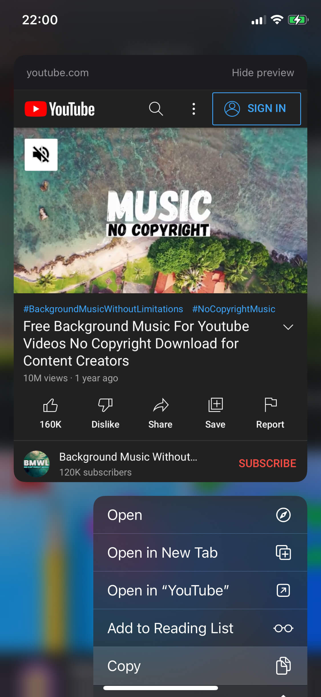</wow-image></div><button aria-label="Expand image" class="vB0h2" data-hook="image-expand-button" type="button"><svg class="vx8ar" viewbox="0 0 19 19" xmlns="http://www.w3.org/2000/svg"><path d="M15.071 8.371V4.585l-4.355 4.356a.2.2 0 0 1-.283 0l-.374-.374a.2.2 0 0 1 0-.283l4.356-4.355h-3.786a.2.2 0 0 1-.2-.2V3.2c0-.11.09-.2.2-.2H16v5.371a.2.2 0 0 1-.2.2h-.529a.2.2 0 0 1-.2-.2zm-6.5 6.9v.529a.2.2 0 0 1-.2.2H3v-5.371c0-.11.09-.2.2-.2h.529c.11 0 .2.09.2.2v3.786l4.355-4.356a.2.2 0 0 1 .283 0l.374.374a.2.2 0 0 1 0 .283L4.585 15.07h3.786c.11 0 .2.09.2.2z" fill="#000" fill-rule="nonzero"></path></svg></button></div></figure></div></div></div><div data-hook="rcv-block21" type="image"></div><div data-breakout="normal"><div class="_04qQG jtShe _6XZJW UGHSE" dir="auto" id="viewer-4hbq9" style="padding-top:0px;padding-bottom:0px;line-height:max(0.8em, 2em)"><span class="mVzZr"><br role="presentation"/></span></div></div><div data-hook="rcv-block22" type="empty-line"></div><div data-breakout="normal"><p class="_04qQG jtShe _6XZJW UGHSE" dir="auto" id="viewer-12h5" style="padding-top:0px;padding-bottom:0px;line-height:max(0.8em, 2em)"><span class="mVzZr"><span style="font-size:16px"><span>Next, go to a YouTube-to-MP3 converter website and paste the URL link in the text box. Click “Convert” and wait for the operation to complete. The website will then provide you with a link that you click to download the converted audio file.</span></span></span></p></div><div data-hook="rcv-block23" type="paragraph"></div><div data-breakout="normal"><div class="_04qQG jtShe _6XZJW UGHSE" dir="auto" id="viewer-c4ruk" style="padding-top:0px;padding-bottom:0px;line-height:max(0.8em, 2em)"><span class="mVzZr"><br role="presentation"/></span></div></div><div data-hook="rcv-block24" type="empty-line"></div><div data-breakout="normal"><div class="_42tfF" id="viewer-3cr71"><div class="_16CGD abqz1"><figure class="Z--PZ" data-hook="figure-IMAGE"><div class="_8c85B" data-hook="image-viewer"><div class="zPKNC uh6iL eO1yr" data-hook="image-viewer-3cr71" id="3cr71" style="--dim-height:2436;--dim-width:1125;--ricos-image-default-border-color:unset"><wow-image class="undefined P6NQu" data-animate-blur="" data-bg-effect-name="" data-has-ssr-src="" data-image-info='{"containerId":"3cr71","displayMode":"fill","isLQIP":true,"isSEOBot":false,"lqipTransition":"blur","encoding":"AVIF","imageData":{"width":1125,"height":2436,"uri":"21260c_200ac3cb05d24fbe82ca4139dffab17e~mv2.png","name":"","displayMode":"fill"}}' data-motion-part="BG_IMG" data-transitioned="" id="21260c_200ac3cb05d24fbe82ca4139dffab17e~mv2.png">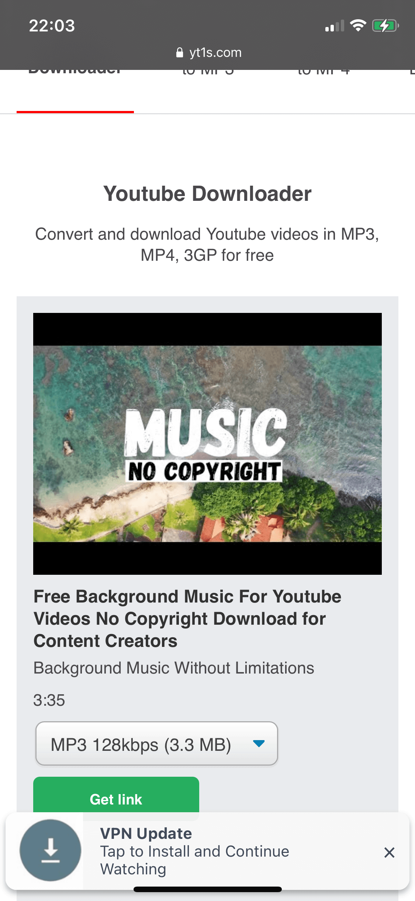</wow-image></div><button aria-label="Expand image" class="vB0h2" data-hook="image-expand-button" type="button"><svg class="vx8ar" viewbox="0 0 19 19" xmlns="http://www.w3.org/2000/svg"><path d="M15.071 8.371V4.585l-4.355 4.356a.2.2 0 0 1-.283 0l-.374-.374a.2.2 0 0 1 0-.283l4.356-4.355h-3.786a.2.2 0 0 1-.2-.2V3.2c0-.11.09-.2.2-.2H16v5.371a.2.2 0 0 1-.2.2h-.529a.2.2 0 0 1-.2-.2zm-6.5 6.9v.529a.2.2 0 0 1-.2.2H3v-5.371c0-.11.09-.2.2-.2h.529c.11 0 .2.09.2.2v3.786l4.355-4.356a.2.2 0 0 1 .283 0l.374.374a.2.2 0 0 1 0 .283L4.585 15.07h3.786c.11 0 .2.09.2.2z" fill="#000" fill-rule="nonzero"></path></svg></button></div></figure></div></div></div><div data-hook="rcv-block25" type="image"></div><div data-breakout="normal"><div class="_04qQG jtShe _6XZJW UGHSE" dir="auto" id="viewer-bi029" style="padding-top:0px;padding-bottom:0px;line-height:max(0.8em, 2em)"><span class="mVzZr"><br role="presentation"/></span></div></div><div data-hook="rcv-block26" type="empty-line"></div><div data-breakout="normal"><p class="_04qQG jtShe _6XZJW UGHSE" dir="auto" id="viewer-7gh0d" style="padding-top:0px;padding-bottom:0px;line-height:max(0.8em, 2em)"><span class="mVzZr"><span style="font-size:16px"><span>The file is usually converted to MP3 format, although there are other audio formats available. Once you have downloaded the file, you have the choice to store the file in your iCloud or Local Files.</span></span></span></p></div><div data-hook="rcv-block27" type="paragraph"></div><div data-breakout="normal"><div class="_04qQG jtShe _6XZJW UGHSE" dir="auto" id="viewer-12pn6" style="padding-top:0px;padding-bottom:0px;line-height:max(0.8em, 2em)"><span class="mVzZr"><br role="presentation"/></span></div></div><div data-hook="rcv-block28" type="empty-line"></div><div data-breakout="normal"><div class="_42tfF" id="viewer-4aauf"><div class="_16CGD abqz1"><figure class="Z--PZ" data-hook="figure-IMAGE"><div class="_8c85B" data-hook="image-viewer"><div class="zPKNC uh6iL eO1yr" data-hook="image-viewer-4aauf" id="4aauf" style="--dim-height:2436;--dim-width:1125;--ricos-image-default-border-color:unset"><wow-image class="undefined P6NQu" data-animate-blur="" data-bg-effect-name="" data-has-ssr-src="" data-image-info='{"containerId":"4aauf","displayMode":"fill","isLQIP":true,"isSEOBot":false,"lqipTransition":"blur","encoding":"AVIF","imageData":{"width":1125,"height":2436,"uri":"21260c_daf0349d6e3e464699c4bd44182e4548~mv2.png","name":"","displayMode":"fill"}}' data-motion-part="BG_IMG" id="21260c_daf0349d6e3e464699c4bd44182e4548~mv2.png">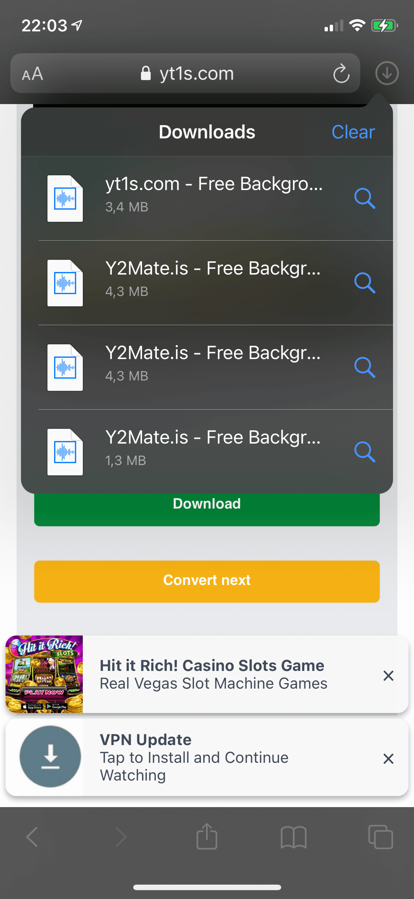</wow-image></div><button aria-label="Expand image" class="vB0h2" data-hook="image-expand-button" type="button"><svg class="vx8ar" viewbox="0 0 19 19" xmlns="http://www.w3.org/2000/svg"><path d="M15.071 8.371V4.585l-4.355 4.356a.2.2 0 0 1-.283 0l-.374-.374a.2.2 0 0 1 0-.283l4.356-4.355h-3.786a.2.2 0 0 1-.2-.2V3.2c0-.11.09-.2.2-.2H16v5.371a.2.2 0 0 1-.2.2h-.529a.2.2 0 0 1-.2-.2zm-6.5 6.9v.529a.2.2 0 0 1-.2.2H3v-5.371c0-.11.09-.2.2-.2h.529c.11 0 .2.09.2.2v3.786l4.355-4.356a.2.2 0 0 1 .283 0l.374.374a.2.2 0 0 1 0 .283L4.585 15.07h3.786c.11 0 .2.09.2.2z" fill="#000" fill-rule="nonzero"></path></svg></button></div></figure></div></div></div><div data-hook="rcv-block29" type="image"></div><div data-breakout="normal"><div class="_04qQG jtShe _6XZJW UGHSE" dir="auto" id="viewer-dajf8" style="padding-top:0px;padding-bottom:0px;line-height:max(0.8em, 2em)"><span class="mVzZr"><br role="presentation"/></span></div></div><div data-hook="rcv-block30" type="empty-line"></div><div data-breakout="normal"><p class="_04qQG jtShe _6XZJW UGHSE" dir="auto" id="viewer-9sjhe" style="padding-top:0px;padding-bottom:0px;line-height:max(0.8em, 2em)"><span class="mVzZr"><span style="font-size:16px"><span>When transferring files from one Apple device to another, you may use the Airdrop function to share the downloaded file with other devices.</span></span></span></p></div><div data-hook="rcv-block31" type="paragraph"></div><div data-breakout="normal"><div class="_04qQG jtShe _6XZJW UGHSE" dir="auto" id="viewer-8p4qq" style="padding-top:0px;padding-bottom:0px;line-height:max(0.8em, 2em)"><span class="mVzZr"><br role="presentation"/></span></div></div><div data-hook="rcv-block32" type="empty-line"></div><div data-breakout="normal"><p class="_04qQG jtShe XCNbA UGHSE" dir="auto" id="viewer-e2d87" style="padding-top:0px;padding-bottom:0px;line-height:max(0.8em, 2em)"><span class="mVzZr"><strong style="font-weight:700"><span style="font-size:16px"><span>Add the Song to the Evermusic App</span></span></strong></span></p></div><div data-hook="rcv-block33" type="paragraph"></div><div data-breakout="normal"><div class="_04qQG jtShe XCNbA UGHSE" dir="auto" id="viewer-dpdlu" style="padding-top:0px;padding-bottom:0px;line-height:max(0.8em, 2em)"><span class="mVzZr"><br role="presentation"/></span></div></div><div data-hook="rcv-block34" type="empty-line"></div><div data-breakout="normal"><p class="_04qQG jtShe _6XZJW UGHSE" dir="auto" id="viewer-7l992" style="padding-top:0px;padding-bottom:0px;line-height:max(0.8em, 2em)"><span class="mVzZr"><span style="font-size:16px"><span>If you do not have the Evermusic app, download it from the App Store. The app is free to use and has several features like a cloud player, equalizer, audio tag editor, and file manager.</span></span></span></p></div><div data-hook="rcv-block35" type="paragraph"></div><div data-breakout="normal"><div class="_04qQG jtShe _6XZJW UGHSE" dir="auto" id="viewer-fq8c6" style="padding-top:0px;padding-bottom:0px;line-height:max(0.8em, 2em)"><span class="mVzZr"><br role="presentation"/></span></div></div><div data-hook="rcv-block36" type="empty-line"></div><div data-breakout="normal"><p class="_04qQG jtShe _6XZJW UGHSE" dir="auto" id="viewer-48dgs" style="padding-top:0px;padding-bottom:0px;line-height:max(0.8em, 2em)"><span class="mVzZr"><span style="font-size:16px"><span>Once you have downloaded the file on your device, add the music to your app. Evermusic has a file manager feature where you can store and manage your music files.</span></span></span></p></div><div data-hook="rcv-block37" type="paragraph"></div><div data-breakout="normal"><p class="_04qQG jtShe _6XZJW UGHSE" dir="auto" id="viewer-1g3nf" style="padding-top:0px;padding-bottom:0px;line-height:max(0.8em, 2em)"><span class="mVzZr"><span style="font-size:16px"><span>There are several ways to import downloaded files to the Evermusic app. The first one is open Files. app and find the downloaded file in the "Downloads" folder. </span></span></span></p></div><div data-hook="rcv-block38" type="paragraph"></div><div data-breakout="normal"><div class="_04qQG jtShe _6XZJW UGHSE" dir="auto" id="viewer-cg2kg" style="padding-top:0px;padding-bottom:0px;line-height:max(0.8em, 2em)"><span class="mVzZr"><br role="presentation"/></span></div></div><div data-hook="rcv-block39" type="empty-line"></div><div data-breakout="normal"><div class="_42tfF" id="viewer-5c7bi"><div class="_16CGD abqz1"><figure class="Z--PZ" data-hook="figure-IMAGE"><div class="_8c85B" data-hook="image-viewer"><div class="zPKNC uh6iL eO1yr" data-hook="image-viewer-5c7bi" id="5c7bi" style="--dim-height:2436;--dim-width:1125;--ricos-image-default-border-color:unset"><wow-image class="undefined P6NQu" data-animate-blur="" data-bg-effect-name="" data-has-ssr-src="" data-image-info='{"containerId":"5c7bi","displayMode":"fill","isLQIP":true,"isSEOBot":false,"lqipTransition":"blur","encoding":"AVIF","imageData":{"width":1125,"height":2436,"uri":"21260c_d852202816d649dd83c4905cd74621d3~mv2.png","name":"","displayMode":"fill"}}' data-motion-part="BG_IMG" id="21260c_d852202816d649dd83c4905cd74621d3~mv2.png">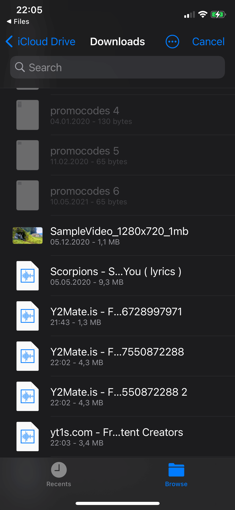</wow-image></div><button aria-label="Expand image" class="vB0h2" data-hook="image-expand-button" type="button"><svg class="vx8ar" viewbox="0 0 19 19" xmlns="http://www.w3.org/2000/svg"><path d="M15.071 8.371V4.585l-4.355 4.356a.2.2 0 0 1-.283 0l-.374-.374a.2.2 0 0 1 0-.283l4.356-4.355h-3.786a.2.2 0 0 1-.2-.2V3.2c0-.11.09-.2.2-.2H16v5.371a.2.2 0 0 1-.2.2h-.529a.2.2 0 0 1-.2-.2zm-6.5 6.9v.529a.2.2 0 0 1-.2.2H3v-5.371c0-.11.09-.2.2-.2h.529c.11 0 .2.09.2.2v3.786l4.355-4.356a.2.2 0 0 1 .283 0l.374.374a.2.2 0 0 1 0 .283L4.585 15.07h3.786c.11 0 .2.09.2.2z" fill="#000" fill-rule="nonzero"></path></svg></button></div></figure></div></div></div><div data-hook="rcv-block40" type="image"></div><div data-breakout="normal"><div class="_04qQG jtShe _6XZJW UGHSE" dir="auto" id="viewer-5067o" style="padding-top:0px;padding-bottom:0px;line-height:max(0.8em, 2em)"><span class="mVzZr"><br role="presentation"/></span></div></div><div data-hook="rcv-block41" type="empty-line"></div><div data-breakout="normal"><p class="_04qQG jtShe _6XZJW UGHSE" dir="auto" id="viewer-49ehl" style="padding-top:0px;padding-bottom:0px;line-height:max(0.8em, 2em)"><span class="mVzZr"><span style="font-size:16px"><span>Then tap on that file to open it and select share action. </span></span></span></p></div><div data-hook="rcv-block42" type="paragraph"></div><div data-breakout="normal"><div class="_04qQG jtShe _6XZJW UGHSE" dir="auto" id="viewer-fr52j" style="padding-top:0px;padding-bottom:0px;line-height:max(0.8em, 2em)"><span class="mVzZr"><br role="presentation"/></span></div></div><div data-hook="rcv-block43" type="empty-line"></div><div data-breakout="normal"><div class="_42tfF" id="viewer-8rlea"><div class="_16CGD abqz1"><figure class="Z--PZ" data-hook="figure-IMAGE"><div class="_8c85B" data-hook="image-viewer"><div class="zPKNC uh6iL eO1yr" data-hook="image-viewer-8rlea" id="8rlea" style="--dim-height:2436;--dim-width:1125;--ricos-image-default-border-color:unset"><wow-image class="undefined P6NQu" data-animate-blur="" data-bg-effect-name="" data-has-ssr-src="" data-image-info='{"containerId":"8rlea","displayMode":"fill","isLQIP":true,"isSEOBot":false,"lqipTransition":"blur","encoding":"AVIF","imageData":{"width":1125,"height":2436,"uri":"21260c_37d5ace0c1574fa5bb4ac3944ce919cf~mv2.png","name":"","displayMode":"fill"}}' data-motion-part="BG_IMG" id="21260c_37d5ace0c1574fa5bb4ac3944ce919cf~mv2.png">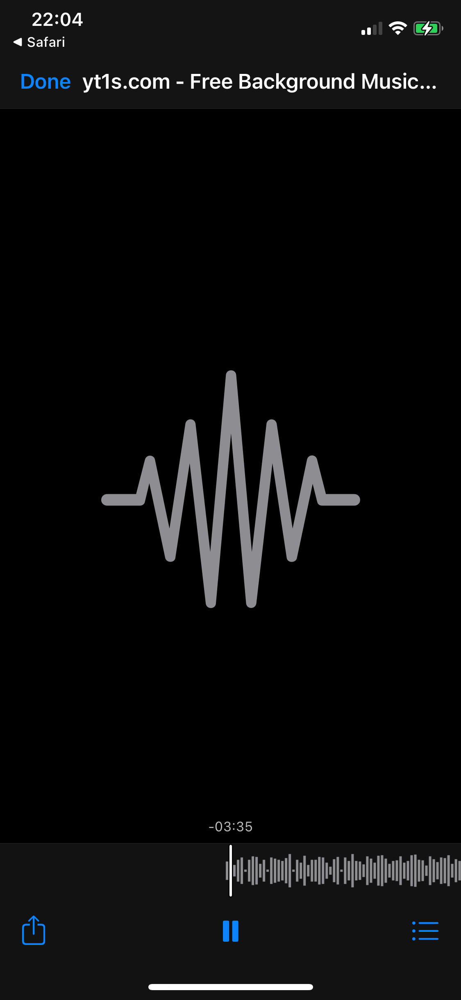</wow-image></div><button aria-label="Expand image" class="vB0h2" data-hook="image-expand-button" type="button"><svg class="vx8ar" viewbox="0 0 19 19" xmlns="http://www.w3.org/2000/svg"><path d="M15.071 8.371V4.585l-4.355 4.356a.2.2 0 0 1-.283 0l-.374-.374a.2.2 0 0 1 0-.283l4.356-4.355h-3.786a.2.2 0 0 1-.2-.2V3.2c0-.11.09-.2.2-.2H16v5.371a.2.2 0 0 1-.2.2h-.529a.2.2 0 0 1-.2-.2zm-6.5 6.9v.529a.2.2 0 0 1-.2.2H3v-5.371c0-.11.09-.2.2-.2h.529c.11 0 .2.09.2.2v3.786l4.355-4.356a.2.2 0 0 1 .283 0l.374.374a.2.2 0 0 1 0 .283L4.585 15.07h3.786c.11 0 .2.09.2.2z" fill="#000" fill-rule="nonzero"></path></svg></button></div></figure></div></div></div><div data-hook="rcv-block44" type="image"></div><div data-breakout="normal"><div class="_04qQG jtShe _6XZJW UGHSE" dir="auto" id="viewer-d0un1" style="padding-top:0px;padding-bottom:0px;line-height:max(0.8em, 2em)"><span class="mVzZr"><br role="presentation"/></span></div></div><div data-hook="rcv-block45" type="empty-line"></div><div data-breakout="normal"><p class="_04qQG jtShe _6XZJW UGHSE" dir="auto" id="viewer-88ihm" style="padding-top:0px;padding-bottom:0px;line-height:max(0.8em, 2em)"><span class="mVzZr"><span style="font-size:16px"><span>On the share screen tap the "More" button and select the Evermusic app to open that file in Evermusic.</span></span></span></p></div><div data-hook="rcv-block46" type="paragraph"></div><div data-breakout="normal"><div class="_42tfF" id="viewer-b211l"><div class="_16CGD abqz1"><figure class="Z--PZ" data-hook="figure-IMAGE"><div class="_8c85B" data-hook="image-viewer"><div class="zPKNC uh6iL eO1yr" data-hook="image-viewer-b211l" id="b211l" style="--dim-height:1115;--dim-width:1125;--ricos-image-default-border-color:unset"><wow-image class="undefined P6NQu" data-animate-blur="" data-bg-effect-name="" data-has-ssr-src="" data-image-info='{"containerId":"b211l","displayMode":"fill","isLQIP":true,"isSEOBot":false,"lqipTransition":"blur","encoding":"AVIF","imageData":{"width":1125,"height":1115,"uri":"21260c_5500693141dc42709ff45315fe96c303~mv2.jpg","name":"","displayMode":"fill"}}' data-motion-part="BG_IMG" id="21260c_5500693141dc42709ff45315fe96c303~mv2.jpg">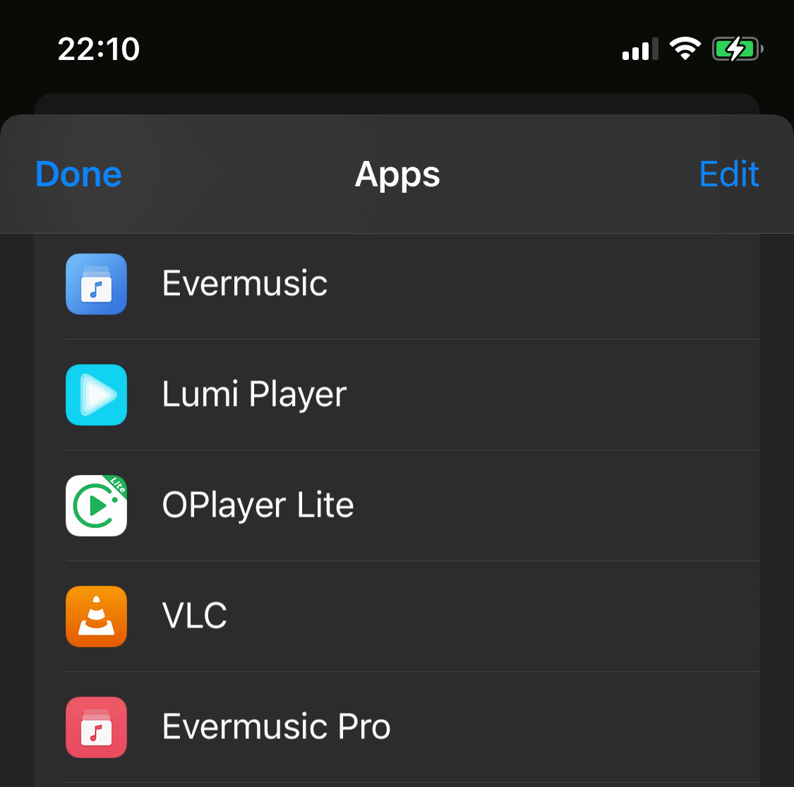</wow-image></div><button aria-label="Expand image" class="vB0h2" data-hook="image-expand-button" type="button"><svg class="vx8ar" viewbox="0 0 19 19" xmlns="http://www.w3.org/2000/svg"><path d="M15.071 8.371V4.585l-4.355 4.356a.2.2 0 0 1-.283 0l-.374-.374a.2.2 0 0 1 0-.283l4.356-4.355h-3.786a.2.2 0 0 1-.2-.2V3.2c0-.11.09-.2.2-.2H16v5.371a.2.2 0 0 1-.2.2h-.529a.2.2 0 0 1-.2-.2zm-6.5 6.9v.529a.2.2 0 0 1-.2.2H3v-5.371c0-.11.09-.2.2-.2h.529c.11 0 .2.09.2.2v3.786l4.355-4.356a.2.2 0 0 1 .283 0l.374.374a.2.2 0 0 1 0 .283L4.585 15.07h3.786c.11 0 .2.09.2.2z" fill="#000" fill-rule="nonzero"></path></svg></button></div></figure></div></div></div><div data-hook="rcv-block47" type="image"></div><div data-breakout="normal"><div class="_04qQG jtShe _6XZJW UGHSE" dir="auto" id="viewer-6kgj3" style="padding-top:0px;padding-bottom:0px;line-height:max(0.8em, 2em)"><span class="mVzZr"><br role="presentation"/></span></div></div><div data-hook="rcv-block48" type="empty-line"></div><div data-breakout="normal"><p class="_04qQG jtShe _6XZJW UGHSE" dir="auto" id="viewer-c7csc" style="padding-top:0px;padding-bottom:0px;line-height:max(0.8em, 2em)"><span class="mVzZr"><span style="font-size:16px"><span>After this file will be opened in the Evermusic app and a confirmation alert will appear, asking if you want to copy that file to the Evermusic app for quick access.</span></span></span></p></div><div data-hook="rcv-block49" type="paragraph"></div><div data-breakout="normal"><div class="_04qQG jtShe _6XZJW UGHSE" dir="auto" id="viewer-7kk95" style="padding-top:0px;padding-bottom:0px;line-height:max(0.8em, 2em)"><span class="mVzZr"><br role="presentation"/></span></div></div><div data-hook="rcv-block50" type="empty-line"></div><div data-breakout="normal"><div class="_42tfF" id="viewer-cjngk"><div class="_16CGD abqz1"><figure class="Z--PZ" data-hook="figure-IMAGE"><div class="_8c85B" data-hook="image-viewer"><div class="zPKNC uh6iL eO1yr" data-hook="image-viewer-cjngk" id="cjngk" style="--dim-height:789;--dim-width:1125;--ricos-image-default-border-color:unset"><wow-image class="undefined P6NQu" data-animate-blur="" data-bg-effect-name="" data-has-ssr-src="" data-image-info='{"containerId":"cjngk","displayMode":"fill","isLQIP":true,"isSEOBot":false,"lqipTransition":"blur","encoding":"AVIF","imageData":{"width":1125,"height":789,"uri":"21260c_24eba0c09ce04c3e8226d5d18cb79c98~mv2.png","name":"","displayMode":"fill"}}' data-motion-part="BG_IMG" id="21260c_24eba0c09ce04c3e8226d5d18cb79c98~mv2.png">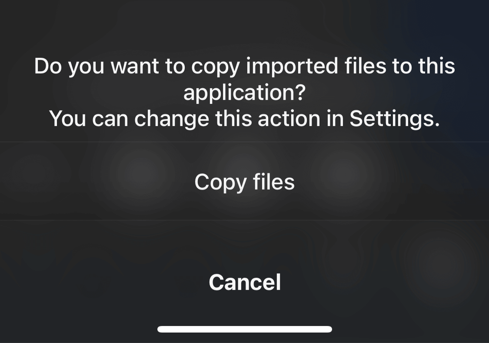</wow-image></div><button aria-label="Expand image" class="vB0h2" data-hook="image-expand-button" type="button"><svg class="vx8ar" viewbox="0 0 19 19" xmlns="http://www.w3.org/2000/svg"><path d="M15.071 8.371V4.585l-4.355 4.356a.2.2 0 0 1-.283 0l-.374-.374a.2.2 0 0 1 0-.283l4.356-4.355h-3.786a.2.2 0 0 1-.2-.2V3.2c0-.11.09-.2.2-.2H16v5.371a.2.2 0 0 1-.2.2h-.529a.2.2 0 0 1-.2-.2zm-6.5 6.9v.529a.2.2 0 0 1-.2.2H3v-5.371c0-.11.09-.2.2-.2h.529c.11 0 .2.09.2.2v3.786l4.355-4.356a.2.2 0 0 1 .283 0l.374.374a.2.2 0 0 1 0 .283L4.585 15.07h3.786c.11 0 .2.09.2.2z" fill="#000" fill-rule="nonzero"></path></svg></button></div></figure></div></div></div><div data-hook="rcv-block51" type="image"></div><div data-breakout="normal"><div class="_04qQG jtShe _6XZJW UGHSE" dir="auto" id="viewer-6967c" style="padding-top:0px;padding-bottom:0px;line-height:max(0.8em, 2em)"><span class="mVzZr"><br role="presentation"/></span></div></div><div data-hook="rcv-block52" type="empty-line"></div><div data-breakout="normal"><p class="_04qQG jtShe _6XZJW UGHSE" dir="auto" id="viewer-a2m5v" style="padding-top:0px;padding-bottom:0px;line-height:max(0.8em, 2em)"><span class="mVzZr"><span style="font-size:16px"><span>Evermusic also has a playlist manager so you can group your songs according to your preferences.</span></span></span></p></div><div data-hook="rcv-block53" type="paragraph"></div><div data-breakout="normal"><div class="_04qQG jtShe _6XZJW UGHSE" dir="auto" id="viewer-crict" style="padding-top:0px;padding-bottom:0px;line-height:max(0.8em, 2em)"><span class="mVzZr"><br role="presentation"/></span></div></div><div data-hook="rcv-block54" type="empty-line"></div><div data-breakout="normal"><p class="_04qQG jtShe _6XZJW UGHSE" dir="auto" id="viewer-cro7j" style="padding-top:0px;padding-bottom:0px;line-height:max(0.8em, 2em)"><span class="mVzZr"><span style="font-size:16px"><span>Another case is much simpler. Just open the "Local files" tab navigate to the "Files on this iPhone" section and choose "Open files..." to open the files import dialog. You can select the downloaded file in that dialog and import it to the app. If you have several files, downloaded to your iPhone just select "Open folder..." and select "Downloads" folder. In that case, all files from the "Downloads" folder will be imported to the app.</span></span></span></p></div><div data-hook="rcv-block55" type="paragraph"></div><div data-breakout="normal"><div class="_04qQG jtShe _6XZJW UGHSE" dir="auto" id="viewer-5q8dl" style="padding-top:0px;padding-bottom:0px;line-height:max(0.8em, 2em)"><span class="mVzZr"><br role="presentation"/></span></div></div><div data-hook="rcv-block56" type="empty-line"></div><div data-breakout="normal"><div class="_42tfF" id="viewer-3255h"><div class="_16CGD abqz1"><figure class="Z--PZ" data-hook="figure-IMAGE"><div class="_8c85B" data-hook="image-viewer"><div class="zPKNC uh6iL eO1yr" data-hook="image-viewer-3255h" id="3255h" style="--dim-height:2436;--dim-width:1125;--ricos-image-default-border-color:unset"><wow-image class="undefined P6NQu" data-animate-blur="" data-bg-effect-name="" data-has-ssr-src="" data-image-info='{"containerId":"3255h","displayMode":"fill","isLQIP":true,"isSEOBot":false,"lqipTransition":"blur","encoding":"AVIF","imageData":{"width":1125,"height":2436,"uri":"21260c_d852202816d649dd83c4905cd74621d3~mv2.png","name":"","displayMode":"fill"}}' data-motion-part="BG_IMG" id="21260c_d852202816d649dd83c4905cd74621d3~mv2.png"></wow-image></div><button aria-label="Expand image" class="vB0h2" data-hook="image-expand-button" type="button"><svg class="vx8ar" viewbox="0 0 19 19" xmlns="http://www.w3.org/2000/svg"><path d="M15.071 8.371V4.585l-4.355 4.356a.2.2 0 0 1-.283 0l-.374-.374a.2.2 0 0 1 0-.283l4.356-4.355h-3.786a.2.2 0 0 1-.2-.2V3.2c0-.11.09-.2.2-.2H16v5.371a.2.2 0 0 1-.2.2h-.529a.2.2 0 0 1-.2-.2zm-6.5 6.9v.529a.2.2 0 0 1-.2.2H3v-5.371c0-.11.09-.2.2-.2h.529c.11 0 .2.09.2.2v3.786l4.355-4.356a.2.2 0 0 1 .283 0l.374.374a.2.2 0 0 1 0 .283L4.585 15.07h3.786c.11 0 .2.09.2.2z" fill="#000" fill-rule="nonzero"></path></svg></button></div></figure></div></div></div><div data-hook="rcv-block57" type="image"></div><div data-breakout="normal"><div class="_04qQG jtShe _6XZJW UGHSE" dir="auto" id="viewer-674cv" style="padding-top:0px;padding-bottom:0px;line-height:max(0.8em, 2em)"><span class="mVzZr"><br role="presentation"/></span></div></div><div data-hook="rcv-block58" type="empty-line"></div><div data-breakout="normal"><div class="_04qQG jtShe XCNbA UGHSE" dir="auto" id="viewer-3niaf" style="padding-top:0px;padding-bottom:0px;line-height:max(0.8em, 2em)"><span class="mVzZr"><br role="presentation"/></span></div></div><div data-hook="rcv-block59" type="empty-line"></div><div data-breakout="normal"><p class="_04qQG jtShe XCNbA UGHSE" dir="auto" id="viewer-q34ja734" style="padding-top:0px;padding-bottom:0px;line-height:max(0.8em, 2em)"><span class="mVzZr"><strong style="font-weight:700"><span style="font-size:16px"><span>ClipGrab</span></span></strong></span></p></div><div data-hook="rcv-block60" type="paragraph"></div><div data-breakout="normal"><div class="_04qQG jtShe XCNbA UGHSE" dir="auto" id="viewer-pxks88438" style="padding-top:0px;padding-bottom:0px;line-height:max(0.8em, 2em)"><span class="mVzZr"><br role="presentation"/></span></div></div><div data-hook="rcv-block61" type="empty-line"></div><div data-breakout="normal"><p class="_04qQG jtShe wGvE1 UGHSE" dir="auto" id="viewer-i0ifv490" style="padding-top:0px;padding-bottom:0px;line-height:max(0.8em, 2em)"><span class="mVzZr"><span style="font-size:16px"><span>Alternatively, you can use a free app called ClipGrab, available for Mac and Windows. The app uses the well-known library youtube-dlp for downloading from YouTube and is updated regularly.</span></span></span></p></div><div data-hook="rcv-block62" type="paragraph"></div><div data-breakout="normal"><div class="_04qQG jtShe _6XZJW UGHSE" dir="auto" id="viewer-znta41177" style="padding-top:0px;padding-bottom:0px;line-height:max(0.8em, 2em)"><span class="mVzZr"><br role="presentation"/></span></div></div><div data-hook="rcv-block63" type="empty-line"></div><div data-breakout="normal"><p class="_04qQG jtShe _6XZJW UGHSE" dir="auto" id="viewer-iwcr31178" style="padding-top:0px;padding-bottom:0px;line-height:max(0.8em, 2em)"><span class="mVzZr"><span style="font-size:16px"><span>Here’s how to use ClipGrab:</span></span></span></p></div><div data-hook="rcv-block64" type="paragraph"></div><div data-breakout="normal"><div class="_04qQG jtShe _6XZJW UGHSE" dir="auto" id="viewer-460mu1180" style="padding-top:0px;padding-bottom:0px;line-height:max(0.8em, 2em)"><span class="mVzZr"><br role="presentation"/></span></div></div><div data-hook="rcv-block65" type="empty-line"></div><div data-breakout="normal"><p class="_04qQG jtShe _6XZJW UGHSE" dir="auto" id="viewer-m4r481181" style="padding-top:0px;padding-bottom:0px;line-height:max(0.8em, 2em)"><span class="mVzZr"><span style="font-size:16px"><span>1. </span></span><strong style="font-weight:700"><span style="font-size:16px"><span>Install the App</span></span></strong><span style="font-size:16px"><span>: Download and install ClipGrab from </span></span><a class="WAzZp aiPD3" data-hook="web-link" href="https://clipgrab.org" rel="noopener" target="_blank"><span style="font-size:16px"><span>https://clipgrab.org</span></span></a><span style="font-size:16px"><span>.</span></span></span></p></div><div data-hook="rcv-block66" type="paragraph"></div><div data-breakout="normal"><p class="_04qQG jtShe _6XZJW UGHSE" dir="auto" id="viewer-3cxf81187" style="padding-top:0px;padding-bottom:0px;line-height:max(0.8em, 2em)"><span class="mVzZr"><span style="font-size:16px"><span>2. </span></span><strong style="font-weight:700"><span style="font-size:16px"><span>Search for Videos</span></span></strong><span style="font-size:16px"><span>: Open the app, go to the “Search” tab, and enter your search text to find the desired video. Tap on the video to proceed to the “Downloads” tab.</span></span></span></p></div><div data-hook="rcv-block67" type="paragraph"></div><div data-breakout="normal"><div class="_42tfF" id="viewer-6jvvc2478"><div class="_16CGD T0dxO"><figure class="Z--PZ" data-hook="figure-IMAGE"><div class="_8c85B" data-hook="image-viewer"><div class="zPKNC uh6iL eO1yr" data-hook="image-viewer-6jvvc2478" id="6jvvc2478" style="--dim-height:724;--dim-width:962;--ricos-image-default-border-color:unset"><wow-image class="undefined P6NQu" data-animate-blur="" data-bg-effect-name="" data-has-ssr-src="" data-image-info='{"containerId":"6jvvc2478","displayMode":"fill","isLQIP":true,"isSEOBot":false,"lqipTransition":"blur","encoding":"AVIF","imageData":{"width":962,"height":724,"uri":"21260c_1422bfb63d924db69729fd4d8eb8cdfa~mv2.png","name":"","displayMode":"fill"}}' data-motion-part="BG_IMG" id="21260c_1422bfb63d924db69729fd4d8eb8cdfa~mv2.png">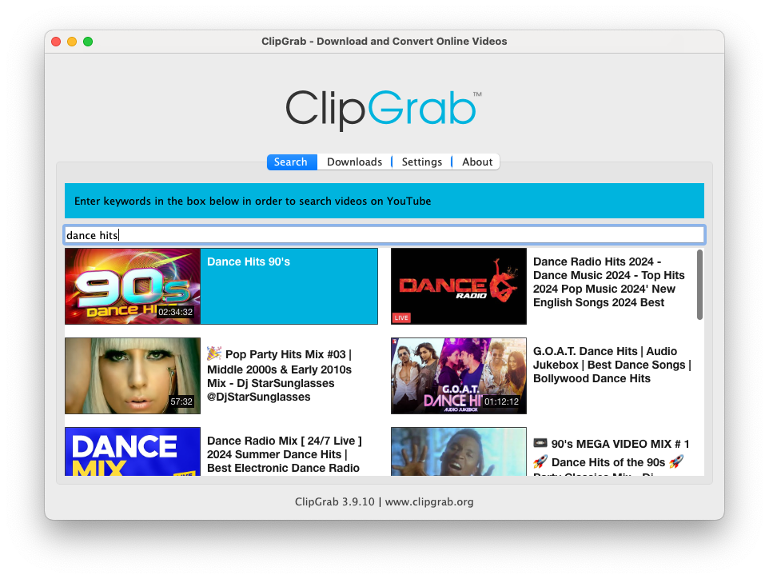</wow-image></div><button aria-label="Expand image" class="vB0h2" data-hook="image-expand-button" type="button"><svg class="vx8ar" viewbox="0 0 19 19" xmlns="http://www.w3.org/2000/svg"><path d="M15.071 8.371V4.585l-4.355 4.356a.2.2 0 0 1-.283 0l-.374-.374a.2.2 0 0 1 0-.283l4.356-4.355h-3.786a.2.2 0 0 1-.2-.2V3.2c0-.11.09-.2.2-.2H16v5.371a.2.2 0 0 1-.2.2h-.529a.2.2 0 0 1-.2-.2zm-6.5 6.9v.529a.2.2 0 0 1-.2.2H3v-5.371c0-.11.09-.2.2-.2h.529c.11 0 .2.09.2.2v3.786l4.355-4.356a.2.2 0 0 1 .283 0l.374.374a.2.2 0 0 1 0 .283L4.585 15.07h3.786c.11 0 .2.09.2.2z" fill="#000" fill-rule="nonzero"></path></svg></button></div></figure></div></div></div><div data-hook="rcv-block68" type="image"></div><div data-breakout="normal"><p class="_04qQG jtShe _6XZJW UGHSE" dir="auto" id="viewer-yjqn91191" style="padding-top:0px;padding-bottom:0px;line-height:max(0.8em, 2em)"><span class="mVzZr"><span style="font-size:16px"><span>3. </span></span><strong style="font-weight:700"><span style="font-size:16px"><span>Enter YouTube URL</span></span></strong><span style="font-size:16px"><span>: Alternatively, you can directly enter the YouTube URL in the “Downloads” tab. The app will search for the direct link.</span></span></span></p></div><div data-hook="rcv-block69" type="paragraph"></div><div data-breakout="normal"><div class="_42tfF" id="viewer-mczt03032"><div class="_16CGD T0dxO"><figure class="Z--PZ" data-hook="figure-IMAGE"><div class="_8c85B" data-hook="image-viewer"><div class="zPKNC uh6iL eO1yr" data-hook="image-viewer-mczt03032" id="mczt03032" style="--dim-height:724;--dim-width:962;--ricos-image-default-border-color:unset"><wow-image class="undefined P6NQu" data-animate-blur="" data-bg-effect-name="" data-has-ssr-src="" data-image-info='{"containerId":"mczt03032","displayMode":"fill","isLQIP":true,"isSEOBot":false,"lqipTransition":"blur","encoding":"AVIF","imageData":{"width":962,"height":724,"uri":"21260c_ec6e17a9cb2d45a1bc221277bbe8c50b~mv2.png","name":"","displayMode":"fill"}}' data-motion-part="BG_IMG" id="21260c_ec6e17a9cb2d45a1bc221277bbe8c50b~mv2.png">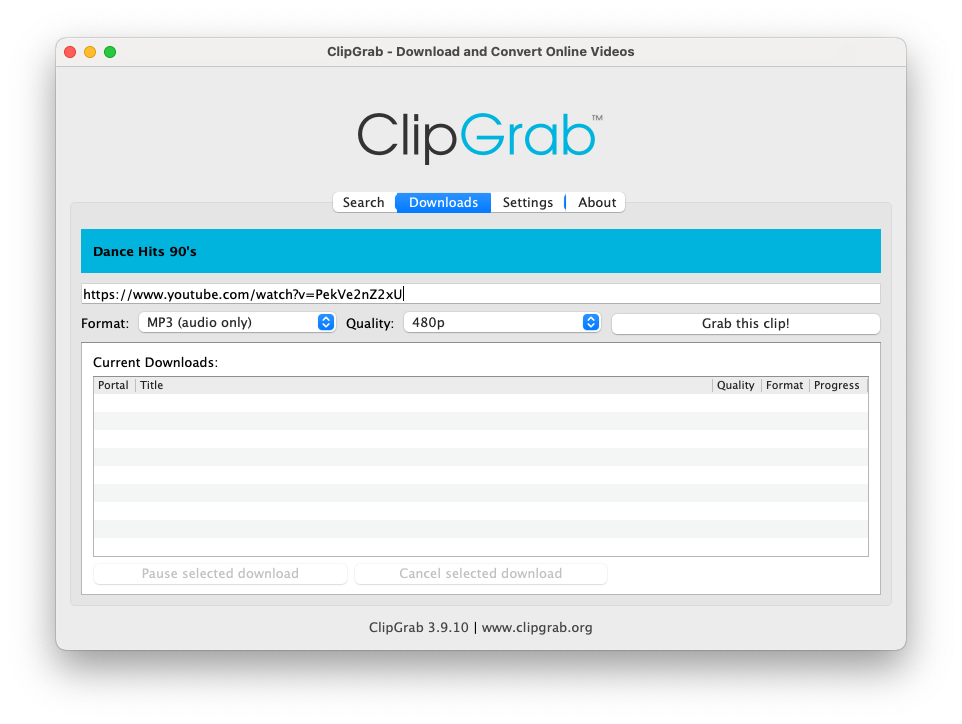</wow-image></div><button aria-label="Expand image" class="vB0h2" data-hook="image-expand-button" type="button"><svg class="vx8ar" viewbox="0 0 19 19" xmlns="http://www.w3.org/2000/svg"><path d="M15.071 8.371V4.585l-4.355 4.356a.2.2 0 0 1-.283 0l-.374-.374a.2.2 0 0 1 0-.283l4.356-4.355h-3.786a.2.2 0 0 1-.2-.2V3.2c0-.11.09-.2.2-.2H16v5.371a.2.2 0 0 1-.2.2h-.529a.2.2 0 0 1-.2-.2zm-6.5 6.9v.529a.2.2 0 0 1-.2.2H3v-5.371c0-.11.09-.2.2-.2h.529c.11 0 .2.09.2.2v3.786l4.355-4.356a.2.2 0 0 1 .283 0l.374.374a.2.2 0 0 1 0 .283L4.585 15.07h3.786c.11 0 .2.09.2.2z" fill="#000" fill-rule="nonzero"></path></svg></button></div></figure></div></div></div><div data-hook="rcv-block70" type="image"></div><div data-breakout="normal"><p class="_04qQG jtShe _6XZJW UGHSE" dir="auto" id="viewer-uco331195" style="padding-top:0px;padding-bottom:0px;line-height:max(0.8em, 2em)"><span class="mVzZr"><span style="font-size:16px"><span>4. </span></span><strong style="font-weight:700"><span style="font-size:16px"><span>Choose Output Format</span></span></strong><span style="font-size:16px"><span>: Select the desired audio format and choose the destination directory on your Mac or PC.</span></span></span></p></div><div data-hook="rcv-block71" type="paragraph"></div><div data-breakout="normal"><div class="_42tfF" id="viewer-ks0043488"><div class="_16CGD abqz1"><figure class="Z--PZ" data-hook="figure-IMAGE"><div class="_8c85B" data-hook="image-viewer"><div class="zPKNC uh6iL eO1yr" data-hook="image-viewer-ks0043488" id="ks0043488" style="--dim-height:180;--dim-width:238;--ricos-image-default-border-color:unset"><wow-image class="undefined P6NQu" data-animate-blur="" data-bg-effect-name="" data-has-ssr-src="" data-image-info='{"containerId":"ks0043488","displayMode":"fill","isLQIP":true,"isSEOBot":false,"lqipTransition":"blur","encoding":"AVIF","imageData":{"width":238,"height":180,"uri":"21260c_41fa5a184c28499d9f18edfba518cba1~mv2.png","name":"","displayMode":"fill"}}' data-motion-part="BG_IMG" id="21260c_41fa5a184c28499d9f18edfba518cba1~mv2.png">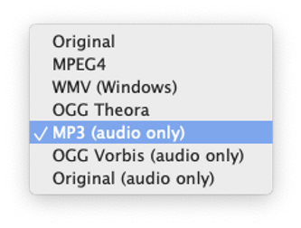</wow-image></div><button aria-label="Expand image" class="vB0h2" data-hook="image-expand-button" type="button"><svg class="vx8ar" viewbox="0 0 19 19" xmlns="http://www.w3.org/2000/svg"><path d="M15.071 8.371V4.585l-4.355 4.356a.2.2 0 0 1-.283 0l-.374-.374a.2.2 0 0 1 0-.283l4.356-4.355h-3.786a.2.2 0 0 1-.2-.2V3.2c0-.11.09-.2.2-.2H16v5.371a.2.2 0 0 1-.2.2h-.529a.2.2 0 0 1-.2-.2zm-6.5 6.9v.529a.2.2 0 0 1-.2.2H3v-5.371c0-.11.09-.2.2-.2h.529c.11 0 .2.09.2.2v3.786l4.355-4.356a.2.2 0 0 1 .283 0l.374.374a.2.2 0 0 1 0 .283L4.585 15.07h3.786c.11 0 .2.09.2.2z" fill="#000" fill-rule="nonzero"></path></svg></button></div></figure></div></div></div><div data-hook="rcv-block72" type="image"></div><div data-breakout="normal"><p class="_04qQG jtShe _6XZJW UGHSE" dir="auto" id="viewer-kddnp1199" style="padding-top:0px;padding-bottom:0px;line-height:max(0.8em, 2em)"><span class="mVzZr"><span style="font-size:16px"><span>5. </span></span><strong style="font-weight:700"><span style="font-size:16px"><span>Start Downloading</span></span></strong><span style="font-size:16px"><span>: Tap “Grab this clip!” to start downloading.</span></span></span></p></div><div data-hook="rcv-block73" type="paragraph"></div><div data-breakout="normal"><div class="_42tfF" id="viewer-fl7ve4025"><div class="_16CGD T0dxO"><figure class="Z--PZ" data-hook="figure-IMAGE"><div class="_8c85B" data-hook="image-viewer"><div class="zPKNC uh6iL eO1yr" data-hook="image-viewer-fl7ve4025" id="fl7ve4025" style="--dim-height:724;--dim-width:962;--ricos-image-default-border-color:unset"><wow-image class="undefined P6NQu" data-animate-blur="" data-bg-effect-name="" data-has-ssr-src="" data-image-info='{"containerId":"fl7ve4025","displayMode":"fill","isLQIP":true,"isSEOBot":false,"lqipTransition":"blur","encoding":"AVIF","imageData":{"width":962,"height":724,"uri":"21260c_06217f48c61747cf8a9788a8d11414af~mv2.png","name":"","displayMode":"fill"}}' data-motion-part="BG_IMG" id="21260c_06217f48c61747cf8a9788a8d11414af~mv2.png">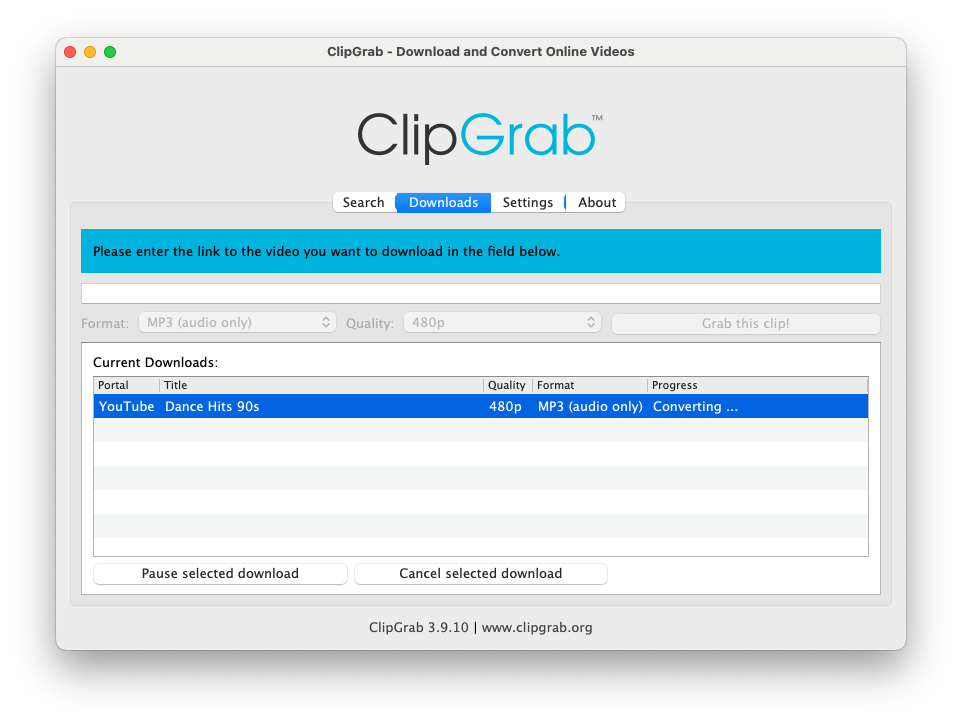</wow-image></div><button aria-label="Expand image" class="vB0h2" data-hook="image-expand-button" type="button"><svg class="vx8ar" viewbox="0 0 19 19" xmlns="http://www.w3.org/2000/svg"><path d="M15.071 8.371V4.585l-4.355 4.356a.2.2 0 0 1-.283 0l-.374-.374a.2.2 0 0 1 0-.283l4.356-4.355h-3.786a.2.2 0 0 1-.2-.2V3.2c0-.11.09-.2.2-.2H16v5.371a.2.2 0 0 1-.2.2h-.529a.2.2 0 0 1-.2-.2zm-6.5 6.9v.529a.2.2 0 0 1-.2.2H3v-5.371c0-.11.09-.2.2-.2h.529c.11 0 .2.09.2.2v3.786l4.355-4.356a.2.2 0 0 1 .283 0l.374.374a.2.2 0 0 1 0 .283L4.585 15.07h3.786c.11 0 .2.09.2.2z" fill="#000" fill-rule="nonzero"></path></svg></button></div></figure></div></div></div><div data-hook="rcv-block74" type="image"></div><div data-breakout="normal"><p class="_04qQG jtShe _6XZJW UGHSE" dir="auto" id="viewer-e335q1203" style="padding-top:0px;padding-bottom:0px;line-height:max(0.8em, 2em)"><span class="mVzZr"><span style="font-size:16px"><span>6. </span></span><strong style="font-weight:700"><span style="font-size:16px"><span>Transfer Downloaded Music</span></span></strong><span style="font-size:16px"><span>: After downloading, you can transfer the music to your device using Wi-Fi Drive or iTunes File Sharing. Instructions are available on our website.</span></span></span></p></div><div data-hook="rcv-block75" type="paragraph"></div><div data-breakout="normal"><div class="_04qQG jtShe _6XZJW UGHSE" dir="auto" id="viewer-q9h451207" style="padding-top:0px;padding-bottom:0px;line-height:max(0.8em, 2em)"><span class="mVzZr"><br role="presentation"/></span></div></div><div data-hook="rcv-block76" type="empty-line"></div><div data-breakout="normal"><p class="_04qQG jtShe XCNbA UGHSE" dir="auto" id="viewer-po69b1208" style="padding-top:0px;padding-bottom:0px;line-height:max(0.8em, 2em)"><span class="mVzZr"><strong style="font-weight:700"><span style="font-size:16px"><span>Troubleshooting Download Issues with ClipGrab</span></span></strong></span></p></div><div data-hook="rcv-block77" type="paragraph"></div><div data-breakout="normal"><div class="_04qQG jtShe _6XZJW UGHSE" dir="auto" id="viewer-kumz41210" style="padding-top:0px;padding-bottom:0px;line-height:max(0.8em, 2em)"><span class="mVzZr"><br role="presentation"/></span></div></div><div data-hook="rcv-block78" type="empty-line"></div><div data-breakout="normal"><p class="_04qQG jtShe _6XZJW UGHSE" dir="auto" id="viewer-0n94p1211" style="padding-top:0px;padding-bottom:0px;line-height:max(0.8em, 2em)"><span class="mVzZr"><span style="font-size:16px"><span>If you face download issues using ClipGrab, try the following steps:</span></span></span></p></div><div data-hook="rcv-block79" type="paragraph"></div><div data-breakout="normal"><div class="_04qQG jtShe _6XZJW UGHSE" dir="auto" id="viewer-lwqwp1213" style="padding-top:0px;padding-bottom:0px;line-height:max(0.8em, 2em)"><span class="mVzZr"><br role="presentation"/></span></div></div><div data-hook="rcv-block80" type="empty-line"></div><div data-breakout="normal"><p class="_04qQG jtShe _6XZJW UGHSE" dir="auto" id="viewer-r7t1u1214" style="padding-top:0px;padding-bottom:0px;line-height:max(0.8em, 2em)"><span class="mVzZr"><span style="font-size:16px"><span>1. </span></span><strong style="font-weight:700"><span style="font-size:16px"><span>Remove yt-dlp Library</span></span></strong><span style="font-size:16px"><span>: Delete the yt-dlp library from your computer.</span></span></span></p></div><div data-hook="rcv-block81" type="paragraph"></div><div data-breakout="normal"><p class="_04qQG jtShe _6XZJW UGHSE" dir="auto" id="viewer-yw3br1218" style="padding-top:0px;padding-bottom:0px;line-height:max(0.8em, 2em)"><span class="mVzZr"><span style="font-size:16px"><span>2. </span></span><strong style="font-weight:700"><span style="font-size:16px"><span>Relaunch ClipGrab</span></span></strong><span style="font-size:16px"><span>: Restart the app. On startup, the app will check the library version and download the latest version from the repository.</span></span></span></p></div><div data-hook="rcv-block82" type="paragraph"></div><div data-breakout="normal"><div class="_42tfF" id="viewer-1ohu64940"><div class="_16CGD T0dxO"><figure class="Z--PZ" data-hook="figure-IMAGE"><div class="_8c85B" data-hook="image-viewer"><div class="zPKNC uh6iL eO1yr" data-hook="image-viewer-1ohu64940" id="1ohu64940" style="--dim-height:440;--dim-width:610;--ricos-image-default-border-color:unset"><wow-image class="undefined P6NQu" data-animate-blur="" data-bg-effect-name="" data-has-ssr-src="" data-image-info='{"containerId":"1ohu64940","displayMode":"fill","isLQIP":true,"isSEOBot":false,"lqipTransition":"blur","encoding":"AVIF","imageData":{"width":610,"height":440,"uri":"21260c_3814963362b047109f462adbd1901356~mv2.png","name":"","displayMode":"fill"}}' data-motion-part="BG_IMG" id="21260c_3814963362b047109f462adbd1901356~mv2.png">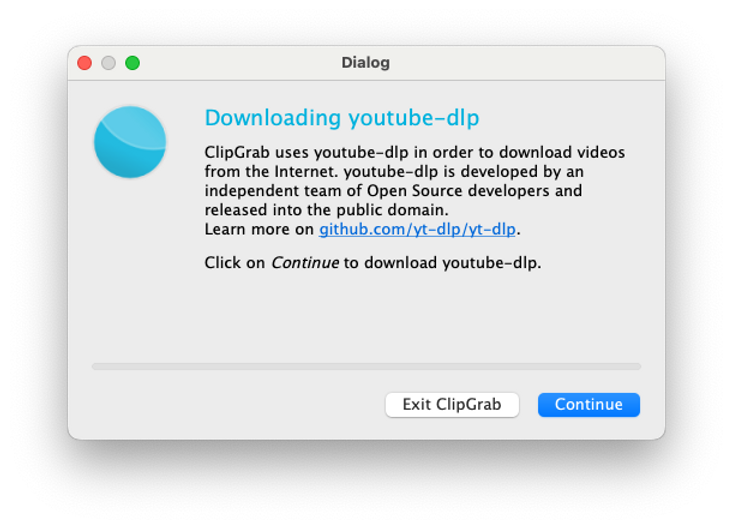</wow-image></div><button aria-label="Expand image" class="vB0h2" data-hook="image-expand-button" type="button"><svg class="vx8ar" viewbox="0 0 19 19" xmlns="http://www.w3.org/2000/svg"><path d="M15.071 8.371V4.585l-4.355 4.356a.2.2 0 0 1-.283 0l-.374-.374a.2.2 0 0 1 0-.283l4.356-4.355h-3.786a.2.2 0 0 1-.2-.2V3.2c0-.11.09-.2.2-.2H16v5.371a.2.2 0 0 1-.2.2h-.529a.2.2 0 0 1-.2-.2zm-6.5 6.9v.529a.2.2 0 0 1-.2.2H3v-5.371c0-.11.09-.2.2-.2h.529c.11 0 .2.09.2.2v3.786l4.355-4.356a.2.2 0 0 1 .283 0l.374.374a.2.2 0 0 1 0 .283L4.585 15.07h3.786c.11 0 .2.09.2.2z" fill="#000" fill-rule="nonzero"></path></svg></button></div></figure></div></div></div><div data-hook="rcv-block83" type="image"></div><div data-breakout="normal"><p class="_04qQG jtShe _6XZJW UGHSE" dir="auto" id="viewer-i8aen1222" style="padding-top:0px;padding-bottom:0px;line-height:max(0.8em, 2em)"><span class="mVzZr"><span style="font-size:16px"><span>3. </span></span><strong style="font-weight:700"><span style="font-size:16px"><span>Check Library Path</span></span></strong><span style="font-size:16px"><span>: You can check the current path for the yt-dlp library by opening the “About” tab in the app.</span></span></span></p></div><div data-hook="rcv-block84" type="paragraph"></div><div data-breakout="normal"><div class="_42tfF" id="viewer-r3b7y4558"><div class="_16CGD T0dxO"><figure class="Z--PZ" data-hook="figure-IMAGE"><div class="_8c85B" data-hook="image-viewer"><div class="zPKNC uh6iL eO1yr" data-hook="image-viewer-r3b7y4558" id="r3b7y4558" style="--dim-height:654;--dim-width:950;--ricos-image-default-border-color:unset"><wow-image class="undefined P6NQu" data-animate-blur="" data-bg-effect-name="" data-has-ssr-src="" data-image-info='{"containerId":"r3b7y4558","displayMode":"fill","isLQIP":true,"isSEOBot":false,"lqipTransition":"blur","encoding":"AVIF","imageData":{"width":950,"height":654,"uri":"21260c_58b4eb59fb4a42a7bff226780655268e~mv2.png","name":"","displayMode":"fill"}}' data-motion-part="BG_IMG" id="21260c_58b4eb59fb4a42a7bff226780655268e~mv2.png">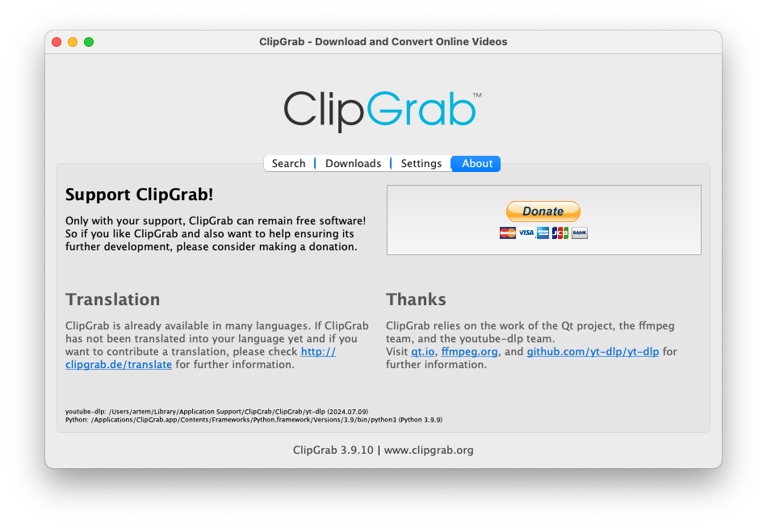</wow-image></div><button aria-label="Expand image" class="vB0h2" data-hook="image-expand-button" type="button"><svg class="vx8ar" viewbox="0 0 19 19" xmlns="http://www.w3.org/2000/svg"><path d="M15.071 8.371V4.585l-4.355 4.356a.2.2 0 0 1-.283 0l-.374-.374a.2.2 0 0 1 0-.283l4.356-4.355h-3.786a.2.2 0 0 1-.2-.2V3.2c0-.11.09-.2.2-.2H16v5.371a.2.2 0 0 1-.2.2h-.529a.2.2 0 0 1-.2-.2zm-6.5 6.9v.529a.2.2 0 0 1-.2.2H3v-5.371c0-.11.09-.2.2-.2h.529c.11 0 .2.09.2.2v3.786l4.355-4.356a.2.2 0 0 1 .283 0l.374.374a.2.2 0 0 1 0 .283L4.585 15.07h3.786c.11 0 .2.09.2.2z" fill="#000" fill-rule="nonzero"></path></svg></button></div></figure></div></div></div><div data-hook="rcv-block85" type="image"></div><div data-breakout="normal"><p class="_04qQG jtShe _6XZJW UGHSE" dir="auto" id="viewer-lyd0u1227" style="padding-top:0px;padding-bottom:0px;line-height:max(0.8em, 2em)"><span class="mVzZr"><span style="font-size:16px"><span>By following these steps, you can ensure smooth downloading and easy access to your favorite music.</span></span></span></p></div><div data-hook="rcv-block86" type="paragraph"></div><div data-breakout="normal"><div class="_04qQG jtShe XCNbA UGHSE" dir="auto" id="viewer-3a7xg576" style="padding-top:0px;padding-bottom:0px;line-height:max(0.8em, 2em)"><span class="mVzZr"><br role="presentation"/></span></div></div><div data-hook="rcv-block87" type="empty-line"></div><div data-breakout="normal"><p class="_04qQG jtShe XCNbA UGHSE" dir="auto" id="viewer-gswrb619" style="padding-top:0px;padding-bottom:0px;line-height:max(0.8em, 2em)"><span class="mVzZr"><strong style="font-weight:700"><span style="font-size:16px"><span>Understanding Copyright Issues</span></span></strong></span></p></div><div data-hook="rcv-block88" type="paragraph"></div><div data-breakout="normal"><div class="_04qQG jtShe XCNbA UGHSE" dir="auto" id="viewer-5t3kn" style="padding-top:0px;padding-bottom:0px;line-height:max(0.8em, 2em)"><span class="mVzZr"><br role="presentation"/></span></div></div><div data-hook="rcv-block89" type="empty-line"></div><div data-breakout="normal"><p class="_04qQG jtShe _6XZJW UGHSE" dir="auto" id="viewer-6b61a" style="padding-top:0px;padding-bottom:0px;line-height:max(0.8em, 2em)"><span class="mVzZr"><span style="font-size:16px"><span>There is no issue with converting YouTube videos into audio files. However, a responsible internet user must understand the impact of potential copyright breaches.</span></span></span></p></div><div data-hook="rcv-block90" type="paragraph"></div><div data-breakout="normal"><p class="_04qQG jtShe _6XZJW UGHSE" dir="auto" id="viewer-9sram" style="padding-top:0px;padding-bottom:0px;line-height:max(0.8em, 2em)"><span class="mVzZr"><span style="font-size:16px"><span>Songs and music videos are works of art and are usually protected by international copyright laws.</span></span></span></p></div><div data-hook="rcv-block91" type="paragraph"></div><div data-breakout="normal"><p class="_04qQG jtShe _6XZJW UGHSE" dir="auto" id="viewer-6phrv" style="padding-top:0px;padding-bottom:0px;line-height:max(0.8em, 2em)"><span class="mVzZr"><span style="font-size:16px"><span>In other words, all entities involved in the production and distribution of the song, like the singer, producer, and studio, earn something from the sales of that product.</span></span></span></p></div><div data-hook="rcv-block92" type="paragraph"></div><div data-breakout="normal"><p class="_04qQG jtShe _6XZJW UGHSE" dir="auto" id="viewer-e1joq" style="padding-top:0px;padding-bottom:0px;line-height:max(0.8em, 2em)"><span class="mVzZr"><span style="font-size:16px"><span>Under copyright law, you cannot copy, reproduce, or re-sell a protected product without permission from those entities. Additionally, downloading a copyrighted product without paying for it is a crime.</span></span></span></p></div><div data-hook="rcv-block93" type="paragraph"></div><div data-breakout="normal"><p class="_04qQG jtShe _6XZJW UGHSE" dir="auto" id="viewer-b86d4" style="padding-top:0px;padding-bottom:0px;line-height:max(0.8em, 2em)"><span class="mVzZr"><span style="font-size:16px"><span>Copyrights also protect YouTube songs and videos. Although you may download songs from YouTube, you must also understand the risks and costs.</span></span></span></p></div><div data-hook="rcv-block94" type="paragraph"></div><div data-breakout="normal"><p class="_04qQG jtShe _6XZJW UGHSE" dir="auto" id="viewer-57vnp" style="padding-top:0px;padding-bottom:0px;line-height:max(0.8em, 2em)"><span class="mVzZr"><span style="font-size:16px"><span>However, if the copyright provisions allow you to download and use the YouTube video in your preferred manner, feel free to do so.</span></span></span></p></div><div data-hook="rcv-block95" type="paragraph"></div><div data-breakout="normal"><p class="_04qQG jtShe _6XZJW UGHSE" dir="auto" id="viewer-5l778" style="padding-top:0px;padding-bottom:0px;line-height:max(0.8em, 2em)"><span class="mVzZr"><span style="font-size:16px"><span>For example, there is royalty-free music available online that you may download for personal use.</span></span></span></p></div><div data-hook="rcv-block96" type="paragraph"></div><div data-breakout="normal"><div class="_04qQG jtShe _6XZJW UGHSE" dir="auto" id="viewer-afvob" style="padding-top:0px;padding-bottom:0px;line-height:max(0.8em, 2em)"><span class="mVzZr"><br role="presentation"/></span></div></div><div data-hook="rcv-block97" type="empty-line"></div><div data-breakout="normal"><p class="_04qQG jtShe XCNbA UGHSE" dir="auto" id="viewer-6ebd6" style="padding-top:0px;padding-bottom:0px;line-height:max(0.8em, 2em)"><span class="mVzZr"><strong style="font-weight:700"><span style="font-size:16px"><span>Conclusion</span></span></strong></span></p></div><div data-hook="rcv-block98" type="paragraph"></div><div data-breakout="normal"><div class="_04qQG jtShe XCNbA UGHSE" dir="auto" id="viewer-3ah2n" style="padding-top:0px;padding-bottom:0px;line-height:max(0.8em, 2em)"><span class="mVzZr"><br role="presentation"/></span></div></div><div data-hook="rcv-block99" type="empty-line"></div><div data-breakout="normal"><p class="_04qQG jtShe _6XZJW UGHSE" dir="auto" id="viewer-2mq5e" style="padding-top:0px;padding-bottom:0px;line-height:max(0.8em, 2em)"><span class="mVzZr"><span style="font-size:16px"><span>Evermusic allows you to play YouTube songs even when you are offline. This feature allows you to listen to your favorite music even when you are not connected to the internet.</span></span></span></p></div><div data-hook="rcv-block100" type="paragraph"></div><div data-breakout="normal"><p class="_04qQG jtShe _6XZJW UGHSE" dir="auto" id="viewer-5jq8q" style="padding-top:0px;padding-bottom:0px;line-height:max(0.8em, 2em)"><span class="mVzZr"><span style="font-size:16px"><span>Just follow the steps in this article, from converting the video to an audio file, downloading it, and adding the file to your app.</span></span></span></p></div><div data-hook="rcv-block101" type="paragraph"></div><div data-breakout="normal"><p class="_04qQG jtShe _6XZJW UGHSE" dir="auto" id="viewer-gd7g" style="padding-top:0px;padding-bottom:0px;line-height:max(0.8em, 2em)"><span class="mVzZr"><span style="font-size:16px"><span>You should note that there may be copyright risks when downloading YouTube videos unless specific provisions allow you to do so.</span></span></span></p></div><div data-hook="rcv-block102" type="paragraph"></div><div data-breakout="normal"><p class="_04qQG jtShe _6XZJW UGHSE" dir="auto" id="viewer-12sj7" style="padding-top:0px;padding-bottom:0px;line-height:max(0.8em, 2em)"><span class="mVzZr"><span style="font-size:16px"><span>If you are uncertain of your options, consider asking for more information from a copyright law expert.</span></span></span></p></div><div data-hook="rcv-block103" type="paragraph"></div><div data-breakout="normal"><div class="_04qQG jtShe _6XZJW UGHSE" dir="auto" id="viewer-3u7ai" style="padding-top:0px;padding-bottom:0px;line-height:max(0.8em, 2em)"><span class="mVzZr"><br role="presentation"/></span></div></div><div data-hook="rcv-block104" type="empty-line"></div><div data-breakout="normal"><p class="_04qQG jtShe _6XZJW UGHSE" dir="auto" id="viewer-d6md0" style="padding-top:0px;padding-bottom:0px;line-height:max(0.8em, 2em)"><span class="mVzZr"><span style="font-size:16px"><span>P.S. There are also several </span></span><strong style="font-weight:700"><span style="font-size:16px"><span>video tutorials</span></span></strong><span style="font-size:16px"><span> available on the Youtube:</span></span></span></p></div><div data-hook="rcv-block105" type="paragraph"></div><div data-breakout="normal"><div class="_04qQG jtShe _6XZJW UGHSE" dir="auto" id="viewer-96dbp" style="padding-top:0px;padding-bottom:0px;line-height:max(0.8em, 2em)"><span class="mVzZr"><br role="presentation"/></span></div></div><div data-hook="rcv-block106" type="empty-line"></div><div data-breakout="normal"><div class="_04qQG jtShe _6XZJW UGHSE" dir="auto" id="viewer-5iuk4" style="padding-top:0px;padding-bottom:0px;line-height:max(0.8em, 2em)"><span class="mVzZr"><br role="presentation"/></span></div></div><div data-hook="rcv-block107" type="empty-line"></div><div data-breakout="normal"><p class="_04qQG jtShe XCNbA UGHSE" dir="auto" id="viewer-486nm" style="padding-top:0px;padding-bottom:0px;line-height:max(0.8em, 2em)"><span class="mVzZr"><strong style="font-weight:700"><span style="font-size:16px"><span>SPANISH</span></span></strong></span></p></div><div data-hook="rcv-block108" type="paragraph"></div><div data-breakout="normal"><div class="_04qQG jtShe _6XZJW UGHSE" dir="auto" id="viewer-7bjst" style="padding-top:0px;padding-bottom:0px;line-height:max(0.8em, 2em)"><span class="mVzZr"><br role="presentation"/></span></div></div><div data-hook="rcv-block109" type="empty-line"></div><div data-breakout="normal"><div class="_42tfF" id="viewer-8lhjh"><div class="_16CGD T0dxO"><figure class="Z--PZ" data-hook="figure-VIDEO"><div class="sHEgk" data-hook="video-player"><div><div class="Uw0dT" data-loaded="false" style="width: 100%; height: 100%;"><button aria-label="Play video" class="react-player__preview" style='width: 100%; height: 100%; background-image: url("https://i.ytimg.com/vi/TlVpbRvAiwA/maxresdefault.jpg"); background-size: cover; background-position: center center; cursor: pointer; border: none; padding: 0px; display: flex; align-items: center; justify-content: center;' tabindex="0" type="button"><div class="react-player__shadow" style="background: radial-gradient(rgba(0, 0, 0, 0.3), rgba(0, 0, 0, 0) 60%); border-radius: 64px; width: 64px; height: 64px; display: flex; align-items: center; justify-content: center;"><div class="react-player__play-icon" style="border-style: solid; border-width: 16px 0px 16px 26px; border-color: transparent transparent transparent white; margin-left: 7px;"></div></div></button></div></div></div></figure></div></div></div><div data-hook="rcv-block110" type="video"></div><div data-breakout="normal"><div class="_04qQG jtShe _6XZJW UGHSE" dir="auto" id="viewer-bt9ma" style="padding-top:0px;padding-bottom:0px;line-height:max(0.8em, 2em)"><span class="mVzZr"><br role="presentation"/></span></div></div><div data-hook="rcv-block111" type="empty-line"></div><div data-breakout="normal"><p class="_04qQG jtShe XCNbA UGHSE" dir="auto" id="viewer-2a0p0" style="padding-top:0px;padding-bottom:0px;line-height:max(0.8em, 2em)"><span class="mVzZr"><strong style="font-weight:700"><span style="font-size:16px"><span>ENGLISH</span></span></strong></span></p></div><div data-hook="rcv-block112" type="paragraph"></div><div data-breakout="normal"><div class="_04qQG jtShe _6XZJW UGHSE" dir="auto" id="viewer-ckodc" style="padding-top:0px;padding-bottom:0px;line-height:max(0.8em, 2em)"><span class="mVzZr"><br role="presentation"/></span></div></div><div data-hook="rcv-block113" type="empty-line"></div><div data-breakout="normal"><div class="_42tfF" id="viewer-flukc"><div class="_16CGD T0dxO"><figure class="Z--PZ" data-hook="figure-VIDEO"><div class="sHEgk" data-hook="video-player"><div><div class="Uw0dT" data-loaded="false" style="width: 100%; height: 100%;"><button aria-label="Play video" class="react-player__preview" style='width: 100%; height: 100%; background-image: url("https://i.ytimg.com/vi/jSDuNguZZNE/maxresdefault.jpg"); background-size: cover; background-position: center center; cursor: pointer; border: none; padding: 0px; display: flex; align-items: center; justify-content: center;' tabindex="0" type="button"><div class="react-player__shadow" style="background: radial-gradient(rgba(0, 0, 0, 0.3), rgba(0, 0, 0, 0) 60%); border-radius: 64px; width: 64px; height: 64px; display: flex; align-items: center; justify-content: center;"><div class="react-player__play-icon" style="border-style: solid; border-width: 16px 0px 16px 26px; border-color: transparent transparent transparent white; margin-left: 7px;"></div></div></button></div></div></div></figure></div></div></div><div data-hook="rcv-block114" type="video"></div><div data-breakout="normal"><div class="_04qQG jtShe _6XZJW UGHSE" dir="auto" id="viewer-9robj" style="padding-top:0px;padding-bottom:0px;line-height:max(0.8em, 2em)"><span class="mVzZr"><br role="presentation"/></span></div></div><div data-hook="rcv-block115" type="empty-line"></div><div data-breakout="normal"><p class="_04qQG jtShe XCNbA UGHSE" dir="auto" id="viewer-ahwxd12110" style="padding-top:0px;padding-bottom:0px;line-height:max(0.8em, 2em)"><span class="mVzZr"><strong style="font-weight:700"><span style="font-size:16px"><span>ENGLISH</span></span></strong></span></p></div><div data-hook="rcv-block116" type="paragraph"></div><div data-breakout="normal"><div class="_04qQG jtShe _6XZJW UGHSE" dir="auto" id="viewer-5nu79" style="padding-top:0px;padding-bottom:0px;line-height:max(0.8em, 2em)"><span class="mVzZr"><br role="presentation"/></span></div></div><div data-hook="rcv-block117" type="empty-line"></div><div data-breakout="normal"><div class="_42tfF" id="viewer-1mp2p"><div class="_16CGD T0dxO"><figure class="Z--PZ" data-hook="figure-VIDEO"><div class="sHEgk" data-hook="video-player"><div><div class="Uw0dT" data-loaded="false" style="width: 100%; height: 100%;"><button aria-label="Play video" class="react-player__preview" style='width: 100%; height: 100%; background-image: url("https://i.ytimg.com/vi/aM8jZi5bBr8/sddefault.jpg"); background-size: cover; background-position: center center; cursor: pointer; border: none; padding: 0px; display: flex; align-items: center; justify-content: center;' tabindex="0" type="button"><div class="react-player__shadow" style="background: radial-gradient(rgba(0, 0, 0, 0.3), rgba(0, 0, 0, 0) 60%); border-radius: 64px; width: 64px; height: 64px; display: flex; align-items: center; justify-content: center;"><div class="react-player__play-icon" style="border-style: solid; border-width: 16px 0px 16px 26px; border-color: transparent transparent transparent white; margin-left: 7px;"></div></div></button></div></div></div></figure></div></div></div><div data-hook="rcv-block118" type="video"></div><div data-breakout="normal"><div class="_04qQG jtShe _6XZJW UGHSE" dir="auto" id="viewer-eicn9" style="padding-top:0px;padding-bottom:0px;line-height:max(0.8em, 2em)"><span class="mVzZr"><br role="presentation"/></span></div></div><div data-hook="rcv-block119" type="empty-line"></div><div data-breakout="normal"><p class="_04qQG jtShe XCNbA UGHSE" dir="auto" id="viewer-51unq" style="padding-top:0px;padding-bottom:0px;line-height:max(0.8em, 2em)"><span class="mVzZr"><strong style="font-weight:700"><span style="font-size:16px"><span>JAPANESE</span></span></strong></span></p></div><div data-hook="rcv-block120" type="paragraph"></div><div data-breakout="normal"><div class="_04qQG jtShe _6XZJW UGHSE" dir="auto" id="viewer-41h1" style="padding-top:0px;padding-bottom:0px;line-height:max(0.8em, 2em)"><span class="mVzZr"><br role="presentation"/></span></div></div><div data-hook="rcv-block121" type="empty-line"></div><div data-breakout="normal"><div class="_42tfF" id="viewer-dn9n2"><div class="_16CGD T0dxO"><figure class="Z--PZ" data-hook="figure-VIDEO"><div class="sHEgk" data-hook="video-player"><div><div class="Uw0dT" data-loaded="false" style="width: 100%; height: 100%;"><button aria-label="Play video" class="react-player__preview" style='width: 100%; height: 100%; background-image: url("https://i.ytimg.com/vi/-kY48ktbo2M/maxresdefault.jpg"); background-size: cover; background-position: center center; cursor: pointer; border: none; padding: 0px; display: flex; align-items: center; justify-content: center;' tabindex="0" type="button"><div class="react-player__shadow" style="background: radial-gradient(rgba(0, 0, 0, 0.3), rgba(0, 0, 0, 0) 60%); border-radius: 64px; width: 64px; height: 64px; display: flex; align-items: center; justify-content: center;"><div class="react-player__play-icon" style="border-style: solid; border-width: 16px 0px 16px 26px; border-color: transparent transparent transparent white; margin-left: 7px;"></div></div></button></div></div></div></figure></div></div></div><div data-hook="rcv-block122" type="video"></div><div data-breakout="normal"><div class="_04qQG jtShe _6XZJW UGHSE" dir="auto" id="viewer-66l1c" style="padding-top:0px;padding-bottom:0px;line-height:max(0.8em, 2em)"><span class="mVzZr"><br role="presentation"/></span></div></div><div data-hook="rcv-block123" type="empty-line"></div><div data-breakout="normal"><div class="_04qQG jtShe XCNbA UGHSE" dir="auto" id="viewer-614st" style="padding-top:0px;padding-bottom:0px;line-height:max(0.8em, 2em)"><span class="mVzZr"><br role="presentation"/></span></div></div><div data-hook="rcv-block124" type="empty-line"></div></div><div data-hook="rcv-block-last" type="last"></div></div></div></div></div></div></section><footer class="PhCafd B6ltWa" data-hook="post-footer"><div class="PKQ95p"><div class="KVKbzt aQg0ny"><section class="JJ6Vcq"><p class="OY6C7u">Tags:</p><nav aria-label="Tags" data-hook="tag-cloud-root" dir="ltr"><ul class="zmug2R"><li><a class="_u2fqx" href="https://www.everappz.com/blog/tags/music" rel="noopener noreferrer">music</a></li><li><a class="_u2fqx" href="https://www.everappz.com/blog/tags/audio" rel="noopener noreferrer">audio</a></li><li><a class="_u2fqx" href="https://www.everappz.com/blog/tags/player" rel="noopener noreferrer">player</a></li><li><a class="_u2fqx" href="https://www.everappz.com/blog/tags/iphone-1" rel="noopener noreferrer">iphone</a></li><li><a class="_u2fqx" href="https://www.everappz.com/blog/tags/playback" rel="noopener noreferrer">playback</a></li><li><a class="_u2fqx" href="https://www.everappz.com/blog/tags/offline" rel="noopener noreferrer">offline</a></li><li><a class="_u2fqx" href="https://www.everappz.com/blog/tags/download" rel="noopener noreferrer">download</a></li><li><a class="_u2fqx" href="https://www.everappz.com/blog/tags/youtube" rel="noopener noreferrer">youtube</a></li></ul></nav></section><section><ul aria-label="Post categories" class="pRGtWE"><li><a class="Tp7c0d" data-hook="link" href="https://www.everappz.com/blog/categories/how-to">How To</a></li></ul></section><section class="Xyiv4I" data-hook="post-main-actions-desktop"><div class="eFSltK"><div class="Zt1NVN"><div class="dw8bme N8V7Oq" content="" contentclassname="CCJTs7" disabled=""><button aria-label="Share via Facebook" class="qXlEOR" data-hook="share-button__facebook"><svg aria-label="Facebook" class="Eueaet" role="img" viewbox="0 0 19 19" width="19" xmlns="http://www.w3.org/2000/svg"><path d="M8.08865986,17 L8.08865986,10.2073504 L5.7890625,10.2073504 L5.7890625,7.42194226 L8.08865986,7.42194226 L8.08865986,5.08269399 C8.08865986,3.38142605 9.46779813,2.00228778 11.1690661,2.00228778 L13.5731201,2.00228778 L13.5731201,4.50700008 L11.8528988,4.50700008 C11.3123209,4.50700008 10.874068,4.94525303 10.874068,5.48583089 L10.874068,7.42198102 L13.5299033,7.42198102 L13.1628515,10.2073892 L10.874068,10.2073892 L10.874068,17 L8.08865986,17 Z"></path></svg><span class="hV4Sgn"></span></button></div><div class="dw8bme KGq2fc" content="" contentclassname="CCJTs7" disabled=""><button aria-label="Share via X (Twitter)" class="qXlEOR" data-hook="share-button__twitter"><svg aria-label="X" class="Eueaet" height="19" role="img" viewbox="0 0 19 19" width="19" xmlns="http://www.w3.org/2000/svg"><path d="M13.303 10.7714L19.1223 4H17.7433L12.6904 9.87954L8.65471 4H4L10.1028 12.8909L4 19.9918H5.37906L10.715 13.7828L14.977 19.9918H19.6317L13.3027 10.7714H13.303ZM11.4142 12.9692L10.7958 12.0839L5.87595 5.03921H7.9941L11.9645 10.7245L12.5829 11.6098L17.7439 18.9998H15.6258L11.4142 12.9696V12.9692Z"></path></svg><span class="hV4Sgn"></span></button></div><div class="dw8bme _aEGAn" content="" contentclassname="CCJTs7" disabled=""><button aria-label="Share via LinkedIn" class="qXlEOR" data-hook="share-button__linked-in"><svg aria-label="LinkedIn" class="Eueaet" role="img" viewbox="0 0 19 19" width="19" xmlns="http://www.w3.org/2000/svg"><path d="M17,17 L13.89343,17 L13.89343,12.1275733 C13.89343,10.9651251 13.87218,9.47069458 12.2781416,9.47069458 C10.660379,9.47069458 10.4126568,10.7365137 10.4126568,12.0434478 L10.4126568,17 L7.30623235,17 L7.30623235,6.98060885 L10.2883591,6.98060885 L10.2883591,8.3495072 L10.3296946,8.3495072 C10.7445056,7.56190587 11.7585364,6.7312941 13.2709225,6.7312941 C16.418828,6.7312941 17,8.80643844 17,11.5041407 L17,17 Z M3.80289931,5.61098151 C2.80647978,5.61098151 2,4.80165627 2,3.80498046 C2,2.80903365 2.80647978,2 3.80289931,2 C4.79669898,2 5.60434314,2.80903365 5.60434314,3.80498046 C5.60434314,4.80165627 4.79669898,5.61098151 3.80289931,5.61098151 Z M2.24786773,17 L2.24786773,6.98060885 L5.35662096,6.98060885 L5.35662096,17 L2.24786773,17 Z"></path></svg><span class="hV4Sgn"></span></button></div><div class="sQTSyXm sJk0Vrh sj_RXWb dw8bme icAt6f" data-content-hook="popover-content--undefined"><div class="spBea5S" data-hook="popover-element"><button aria-label="Share via link" class="qXlEOR" data-hook="share-button__link"><svg aria-hidden="true" class="Eueaet" height="19" viewbox="0 0 19 19" width="19" xmlns="http://www.w3.org/2000/svg"><path d="M10.6000004,11.7622375 L14.2108923,11.7622375 C15.4561791,11.7622375 16.4656836,10.7527331 16.4656836,9.50744629 L16.4656836,9.50744629 L16.4656836,9.50744629 C16.4656836,8.26215946 15.4561791,7.25265503 14.2108923,7.25265503 L10.6000004,7.25265503 L10.6000004,5.84470702 L10.6000004,5.84470702 C10.6000004,5.73425007 10.6895434,5.64470702 10.8000004,5.64470702 L14.3209766,5.64470702 C16.4501961,5.64470702 18.1762695,7.37078048 18.1762695,9.5 C18.1762695,11.6292195 16.4501961,13.355293 14.3209766,13.355293 L10.8000004,13.355293 L10.8000004,13.355293 C10.6895434,13.355293 10.6000004,13.2657499 10.6000004,13.155293 L10.6000004,11.7622375 Z M8.39999962,7.25265503 L4.82047474,7.25265503 C3.57518792,7.25265503 2.56568348,8.26215946 2.56568348,9.50744629 L2.56568348,9.50744629 L2.56568348,9.50744629 C2.56568348,10.7527331 3.57518792,11.7622375 4.82047474,11.7622375 L8.39999962,11.7622375 L8.39999962,13.1578418 C8.39999962,13.2682987 8.31045657,13.3578418 8.19999962,13.3578418 L4.60784179,13.3578418 C2.4772146,13.3578418 0.75,11.6306272 0.75,9.5 C0.75,7.36937281 2.4772146,5.64215821 4.60784179,5.64215821 L8.19999962,5.64215821 L8.19999962,5.64215821 C8.31045657,5.64215821 8.39999962,5.73170126 8.39999962,5.84215821 L8.39999962,7.25265503 Z M6.66568358,8.69999981 L12.2656836,8.69999981 C12.3761405,8.69999981 12.4656836,8.78954286 12.4656836,8.89999981 L12.4656836,10.1499998 C12.4656836,10.2604567 12.3761405,10.3499998 12.2656836,10.3499998 L6.66568358,10.3499998 C6.55522663,10.3499998 6.46568358,10.2604567 6.46568358,10.1499998 L6.46568358,8.89999981 C6.46568358,8.78954286 6.55522663,8.69999981 6.66568358,8.69999981 Z" transform="rotate(-45 9.463 9.5)"></path></svg><span class="hV4Sgn"></span></button></div></div><div class="dw8bme lKAa1v" content="" contentclassname="CCJTs7" disabled=""><button aria-label="Print Post" class="qXlEOR" data-hook="share-button__print"><svg class="Eueaet" height="19" viewbox="0 0 24 24" width="19" xmlns="http://www.w3.org/2000/svg"><path clip-rule="evenodd" d="M18 9H19C19.5523 9 20 9.44772 20 10V17C20 17.5523 19.5523 18 19 18H18V20C18 20.5523 17.5523 21 17 21L7 21C6.44772 21 6 20.5523 6 20L6 18H5C4.44772 18 4 17.5523 4 17V10C4 9.44772 4.44772 9 5 9H6V5C6 4.44772 6.44772 4 7 4H15.7929C15.9255 4 16.0527 4.05268 16.1464 4.14645L17.8536 5.85355C17.9473 5.94732 18 6.0745 18 6.20711V9ZM7 9V5L14 5V7.5C14 7.77614 14.2239 8 14.5 8H17V9H7ZM6 17L6 13L18 13L18 17H19V10H5V17H6ZM17 7V6.41421L15.5858 5H15V7H17ZM17 20L7 20L7 14L17 14L17 20Z" fill-rule="evenodd"></path></svg><span class="hV4Sgn"></span></button></div></div></div><div class="FyFkaC" data-hook="post-main-actions__stats"><div class="TAdeda" data-hook="post-stats"><div class="OiMXGB" style=""><div aria-label="7,879 views" role="status"><div aria-hidden="true" class="eYTCrB"><svg viewbox="0 0 19 19" width="19" xmlns="http://www.w3.org/2000/svg"><title></title><path d="M18.6514224,10.4604595 C17.3924224,11.9688254 13.9774224,15.4790227 9.46342244,15.5 L9.42442244,15.5 C6.26242244,15.5 3.20842244,13.7938483 0.345422443,10.4264963 C-0.115140814,9.88163847 -0.115140814,9.08439833 0.345422443,8.5395405 C1.60442244,7.03117456 5.01942244,3.52097727 9.53342244,3.5 L9.57342244,3.5 C12.7354224,3.5 15.7894224,5.20615167 18.6524224,8.5735037 C19.1122856,9.11875503 19.1118633,9.91569484 18.6514224,10.4604595 Z M17.8674224,9.2228003 C15.2084224,6.09518855 12.4194224,4.50990594 9.57442244,4.50990594 L9.54042244,4.50990594 C5.46142244,4.52888537 2.30642244,7.78335969 1.14042244,9.18084575 C0.991393136,9.3517953 0.988008897,9.60533857 1.13242244,9.78019645 C3.79142244,12.9078082 6.58142244,14.4920919 9.42542244,14.4920919 L9.46042244,14.4920919 C13.5394224,14.4741114 16.6934224,11.2196371 17.8604224,9.822151 C18.0095734,9.6511131 18.0125381,9.39726759 17.8674224,9.2228003 L17.8674224,9.2228003 Z M9.49942244,13.3932823 C7.35251405,13.3646853 5.63255349,11.6080263 5.65157552,9.46333471 C5.67059754,7.31864313 7.42144652,5.59270141 9.56852513,5.6021069 C11.7156037,5.61151239 13.4512316,7.35272696 13.4514224,9.49750271 C13.4349115,11.6625186 11.6668124,13.4054651 9.49942244,13.3932823 L9.49942244,13.3932823 Z M9.49942244,6.61762258 C7.91092198,6.63961751 6.63891624,7.93990193 6.65354481,9.52676854 C6.66817338,11.1136351 7.96393479,12.3902997 9.55257137,12.3830695 C11.1412079,12.3758393 12.4252698,11.0874333 12.4254224,9.50049946 C12.4127657,7.89797688 11.1037033,6.60820738 9.49942244,6.61762258 L9.49942244,6.61762258 Z"></path></svg>7879</div><span class="FyJQDJ">7,879 views</span></div></div></div><div class="yFrqzV" style=""><button aria-describedby="TPAMultiSection_jvugchim-like-button-a3e6ed90-9a8b-4c20-9b53-d5240d7b70d0" aria-label="Like post" class="Kh5HMz"><span aria-live="polite" class="laz8E8" id="TPAMultiSection_jvugchim-like-button-a3e6ed90-9a8b-4c20-9b53-d5240d7b70d0">10 likes. Post not marked as liked</span><span aria-hidden="true" class="h7K_lu" data-hook="like-button-with-count__like-count"><span aria-hidden="true" class="FYRNvd like-button-with-count__like-count">10</span><span aria-hidden="true" class="like-button G5Aa3J" data-hook="like-button"><span aria-hidden="true" class="YfFkQX"><span aria-hidden="true" class="zkv91u"></span></span><span aria-hidden="true" class="y5oGWU"><span aria-hidden="true" class="zkv91u"></span></span><span aria-hidden="true" class="Eu1LNI"><span aria-hidden="true" class="zkv91u"></span></span><span aria-hidden="true" class="PxeFnW"><span aria-hidden="true" class="zkv91u"></span></span><span aria-hidden="true" class="X22cAo"></span><svg aria-hidden="true" viewbox="0 0 19 19" width="19" xmlns="http://www.w3.org/2000/svg"><path d="M9.44985848,15.5291774 C9.43911371,15.5362849 9.42782916,15.5449227 9.41715267,15.5553324 L9.44985848,15.5291774 Z M9.44985848,15.5291774 L9.49370677,15.4941118 C9.15422701,15.7147757 10.2318883,15.0314406 10.7297038,14.6971183 C11.5633567,14.1372547 12.3827081,13.5410755 13.1475707,12.9201001 C14.3829188,11.9171478 15.3570936,10.9445466 15.9707237,10.0482572 C16.0768097,9.89330422 16.1713564,9.74160032 16.2509104,9.59910798 C17.0201658,8.17755699 17.2088969,6.78363112 16.7499013,5.65913129 C16.4604017,4.81092573 15.7231445,4.11008901 14.7401472,3.70936139 C13.1379564,3.11266008 11.0475663,3.84092251 9.89976068,5.36430396 L9.50799408,5.8842613 L9.10670536,5.37161711 C7.94954806,3.89335486 6.00516066,3.14638251 4.31830373,3.71958508 C3.36517186,4.00646284 2.65439601,4.72068063 2.23964629,5.77358234 C1.79050315,6.87166888 1.98214559,8.26476279 2.74015555,9.58185512 C2.94777753,9.93163559 3.23221417,10.3090129 3.5869453,10.7089994 C4.17752179,11.3749196 4.94653811,12.0862394 5.85617417,12.8273544 C7.11233096,13.8507929 9.65858244,15.6292133 9.58280954,15.555334 C9.53938013,15.5129899 9.48608859,15.5 9.50042471,15.5 C9.5105974,15.5 9.48275828,15.5074148 9.44985848,15.5291774 Z"></path></svg></span></span></button></div></div></section></div></div></footer></div></article></div></div></div><div class="zp8IQu zp8s_J"><div><section class="oY1ew3" data-hook="recent-posts" style="--blog-pl-common-padding-top:28px;--blog-pl-common-padding-bottom:25px;--blog-pl-slider-padding-top:16px;--blog-pl-slider-padding-bottom:24px;--blog-pl-header-height:34px;--blog-pl-header-margin-bottom:18px;--blog-pl-footer-content-height:18px;--blog-pl-footer-separator-margin:15px;--blog-pl-footer-padding-top:8px;--blog-pl-common-title-margin:11px;--blog-pl-default-title-margin:10px;--blog-pl-slider-title-margin-top:10px;--blog-pl-category-label-margin-bottom:12px;--blog-pl-slider-category-label-margin-bottom:2px"><section><div class="zHLEBV"><article class="qbu2Gh" data-hook="recent-post-list-item"><div class="dkbPQd"><a aria-label="How to Optimize Your App Store Keywords and Metadata — and the Best Free Tool to Help You" class="blog-link-hover-color" data-hook="link" href="https://www.everappz.com/post/how-to-optimize-your-app-store-keywords-and-metadata-and-the-best-free-tool-to-help-you" tabindex="-1"><div class="kkOpHH"><wow-image class="TI1b5D HNM0p2" data-bg-effect-name="" data-has-ssr-src="" data-image-info='{"displayMode":"fill","targetWidth":450,"targetHeight":253,"isSEOBot":false,"encoding":"AVIF","imageData":{"width":1792,"height":1024,"uri":"21260c_73d4385b9c2d45ec950c6208184da134~mv2.jpg","name":"","displayMode":"fill"}}' data-motion-part="BG_IMG undefined" style="--wix-img-max-width:max(1792px, 100%)"></wow-image></div></a><div class="ZnRZP5"><header data-hook="recent-post__title"><a class="hPl9QB" href="https://www.everappz.com/post/how-to-optimize-your-app-store-keywords-and-metadata-and-the-best-free-tool-to-help-you">How to Optimize Your App Store Keywords and Metadata — and the Best Free Tool to Help You</a></header><footer class="LO60EX" data-hook="post-footer"><div class="D6DTyh"><div class="LVcAxq post-stats" data-hook="post-stats"><div class="qcmXZU" style=""><span class="t66ylj" data-hook="view-count"><svg aria-label="101 views" viewbox="0 0 19 19" width="19" xmlns="http://www.w3.org/2000/svg"><title></title><path d="M18.6514224,10.4604595 C17.3924224,11.9688254 13.9774224,15.4790227 9.46342244,15.5 L9.42442244,15.5 C6.26242244,15.5 3.20842244,13.7938483 0.345422443,10.4264963 C-0.115140814,9.88163847 -0.115140814,9.08439833 0.345422443,8.5395405 C1.60442244,7.03117456 5.01942244,3.52097727 9.53342244,3.5 L9.57342244,3.5 C12.7354224,3.5 15.7894224,5.20615167 18.6524224,8.5735037 C19.1122856,9.11875503 19.1118633,9.91569484 18.6514224,10.4604595 Z M17.8674224,9.2228003 C15.2084224,6.09518855 12.4194224,4.50990594 9.57442244,4.50990594 L9.54042244,4.50990594 C5.46142244,4.52888537 2.30642244,7.78335969 1.14042244,9.18084575 C0.991393136,9.3517953 0.988008897,9.60533857 1.13242244,9.78019645 C3.79142244,12.9078082 6.58142244,14.4920919 9.42542244,14.4920919 L9.46042244,14.4920919 C13.5394224,14.4741114 16.6934224,11.2196371 17.8604224,9.822151 C18.0095734,9.6511131 18.0125381,9.39726759 17.8674224,9.2228003 L17.8674224,9.2228003 Z M9.49942244,13.3932823 C7.35251405,13.3646853 5.63255349,11.6080263 5.65157552,9.46333471 C5.67059754,7.31864313 7.42144652,5.59270141 9.56852513,5.6021069 C11.7156037,5.61151239 13.4512316,7.35272696 13.4514224,9.49750271 C13.4349115,11.6625186 11.6668124,13.4054651 9.49942244,13.3932823 L9.49942244,13.3932823 Z M9.49942244,6.61762258 C7.91092198,6.63961751 6.63891624,7.93990193 6.65354481,9.52676854 C6.66817338,11.1136351 7.96393479,12.3902997 9.55257137,12.3830695 C11.1412079,12.3758393 12.4252698,11.0874333 12.4254224,9.50049946 C12.4127657,7.89797688 11.1037033,6.60820738 9.49942244,6.61762258 L9.49942244,6.61762258 Z"></path></svg><span class="eYQJQu">101</span></span></div></div></div><div class="wChIrD" style=""><button aria-describedby="TPAMultiSection_jvugchim-like-button-7ed37e85-c72a-49df-acac-2838d0993091" aria-label="Like post" class="Kh5HMz"><span aria-live="polite" class="laz8E8" id="TPAMultiSection_jvugchim-like-button-7ed37e85-c72a-49df-acac-2838d0993091">1 like. Post not marked as liked</span><span aria-hidden="true" class="h7K_lu" data-hook="like-button-with-count__like-count"><span aria-hidden="true" class="FYRNvd like-button-with-count__like-count">1</span><span aria-hidden="true" class="like-button G5Aa3J" data-hook="like-button"><span aria-hidden="true" class="YfFkQX"><span aria-hidden="true" class="zkv91u"></span></span><span aria-hidden="true" class="y5oGWU"><span aria-hidden="true" class="zkv91u"></span></span><span aria-hidden="true" class="Eu1LNI"><span aria-hidden="true" class="zkv91u"></span></span><span aria-hidden="true" class="PxeFnW"><span aria-hidden="true" class="zkv91u"></span></span><span aria-hidden="true" class="X22cAo"></span><svg aria-hidden="true" viewbox="0 0 19 19" width="19" xmlns="http://www.w3.org/2000/svg"><path d="M9.44985848,15.5291774 C9.43911371,15.5362849 9.42782916,15.5449227 9.41715267,15.5553324 L9.44985848,15.5291774 Z M9.44985848,15.5291774 L9.49370677,15.4941118 C9.15422701,15.7147757 10.2318883,15.0314406 10.7297038,14.6971183 C11.5633567,14.1372547 12.3827081,13.5410755 13.1475707,12.9201001 C14.3829188,11.9171478 15.3570936,10.9445466 15.9707237,10.0482572 C16.0768097,9.89330422 16.1713564,9.74160032 16.2509104,9.59910798 C17.0201658,8.17755699 17.2088969,6.78363112 16.7499013,5.65913129 C16.4604017,4.81092573 15.7231445,4.11008901 14.7401472,3.70936139 C13.1379564,3.11266008 11.0475663,3.84092251 9.89976068,5.36430396 L9.50799408,5.8842613 L9.10670536,5.37161711 C7.94954806,3.89335486 6.00516066,3.14638251 4.31830373,3.71958508 C3.36517186,4.00646284 2.65439601,4.72068063 2.23964629,5.77358234 C1.79050315,6.87166888 1.98214559,8.26476279 2.74015555,9.58185512 C2.94777753,9.93163559 3.23221417,10.3090129 3.5869453,10.7089994 C4.17752179,11.3749196 4.94653811,12.0862394 5.85617417,12.8273544 C7.11233096,13.8507929 9.65858244,15.6292133 9.58280954,15.555334 C9.53938013,15.5129899 9.48608859,15.5 9.50042471,15.5 C9.5105974,15.5 9.48275828,15.5074148 9.44985848,15.5291774 Z"></path></svg></span></span></button></div></footer></div></div></article><article class="qbu2Gh" data-hook="recent-post-list-item"><div class="dkbPQd"><a aria-label="How to Transfer Your Music Library Between Devices in Evermusic: Step-by-Step Guide" class="blog-link-hover-color" data-hook="link" href="https://www.everappz.com/post/how-to-transfer-your-music-library-between-devices-in-evermusic-step-by-step-guide" tabindex="-1"><div class="kkOpHH"><wow-image class="TI1b5D HNM0p2" data-bg-effect-name="" data-has-ssr-src="" data-image-info='{"displayMode":"fill","targetWidth":450,"targetHeight":253,"isSEOBot":false,"encoding":"AVIF","imageData":{"width":1792,"height":1024,"uri":"21260c_d023b4c438de4d2bb3de1700327b878e~mv2.jpg","name":"","displayMode":"fill"}}' data-motion-part="BG_IMG undefined" style="--wix-img-max-width:max(1792px, 100%)"></wow-image></div></a><div class="ZnRZP5"><header data-hook="recent-post__title"><a class="hPl9QB" href="https://www.everappz.com/post/how-to-transfer-your-music-library-between-devices-in-evermusic-step-by-step-guide">How to Transfer Your Music Library Between Devices in Evermusic: Step-by-Step Guide</a></header><footer class="LO60EX" data-hook="post-footer"><div class="D6DTyh"><div class="LVcAxq post-stats" data-hook="post-stats"><div class="qcmXZU" style=""><span class="t66ylj" data-hook="view-count"><svg aria-label="985 views" viewbox="0 0 19 19" width="19" xmlns="http://www.w3.org/2000/svg"><title></title><path d="M18.6514224,10.4604595 C17.3924224,11.9688254 13.9774224,15.4790227 9.46342244,15.5 L9.42442244,15.5 C6.26242244,15.5 3.20842244,13.7938483 0.345422443,10.4264963 C-0.115140814,9.88163847 -0.115140814,9.08439833 0.345422443,8.5395405 C1.60442244,7.03117456 5.01942244,3.52097727 9.53342244,3.5 L9.57342244,3.5 C12.7354224,3.5 15.7894224,5.20615167 18.6524224,8.5735037 C19.1122856,9.11875503 19.1118633,9.91569484 18.6514224,10.4604595 Z M17.8674224,9.2228003 C15.2084224,6.09518855 12.4194224,4.50990594 9.57442244,4.50990594 L9.54042244,4.50990594 C5.46142244,4.52888537 2.30642244,7.78335969 1.14042244,9.18084575 C0.991393136,9.3517953 0.988008897,9.60533857 1.13242244,9.78019645 C3.79142244,12.9078082 6.58142244,14.4920919 9.42542244,14.4920919 L9.46042244,14.4920919 C13.5394224,14.4741114 16.6934224,11.2196371 17.8604224,9.822151 C18.0095734,9.6511131 18.0125381,9.39726759 17.8674224,9.2228003 L17.8674224,9.2228003 Z M9.49942244,13.3932823 C7.35251405,13.3646853 5.63255349,11.6080263 5.65157552,9.46333471 C5.67059754,7.31864313 7.42144652,5.59270141 9.56852513,5.6021069 C11.7156037,5.61151239 13.4512316,7.35272696 13.4514224,9.49750271 C13.4349115,11.6625186 11.6668124,13.4054651 9.49942244,13.3932823 L9.49942244,13.3932823 Z M9.49942244,6.61762258 C7.91092198,6.63961751 6.63891624,7.93990193 6.65354481,9.52676854 C6.66817338,11.1136351 7.96393479,12.3902997 9.55257137,12.3830695 C11.1412079,12.3758393 12.4252698,11.0874333 12.4254224,9.50049946 C12.4127657,7.89797688 11.1037033,6.60820738 9.49942244,6.61762258 L9.49942244,6.61762258 Z"></path></svg><span class="eYQJQu">985</span></span></div></div></div><div class="wChIrD" style=""><button aria-describedby="TPAMultiSection_jvugchim-like-button-a4249e3c-21af-404c-bde1-01daa3dae1dc" aria-label="Like post" class="Kh5HMz"><span aria-live="polite" class="laz8E8" id="TPAMultiSection_jvugchim-like-button-a4249e3c-21af-404c-bde1-01daa3dae1dc">2 likes. Post not marked as liked</span><span aria-hidden="true" class="h7K_lu" data-hook="like-button-with-count__like-count"><span aria-hidden="true" class="FYRNvd like-button-with-count__like-count">2</span><span aria-hidden="true" class="like-button G5Aa3J" data-hook="like-button"><span aria-hidden="true" class="YfFkQX"><span aria-hidden="true" class="zkv91u"></span></span><span aria-hidden="true" class="y5oGWU"><span aria-hidden="true" class="zkv91u"></span></span><span aria-hidden="true" class="Eu1LNI"><span aria-hidden="true" class="zkv91u"></span></span><span aria-hidden="true" class="PxeFnW"><span aria-hidden="true" class="zkv91u"></span></span><span aria-hidden="true" class="X22cAo"></span><svg aria-hidden="true" viewbox="0 0 19 19" width="19" xmlns="http://www.w3.org/2000/svg"><path d="M9.44985848,15.5291774 C9.43911371,15.5362849 9.42782916,15.5449227 9.41715267,15.5553324 L9.44985848,15.5291774 Z M9.44985848,15.5291774 L9.49370677,15.4941118 C9.15422701,15.7147757 10.2318883,15.0314406 10.7297038,14.6971183 C11.5633567,14.1372547 12.3827081,13.5410755 13.1475707,12.9201001 C14.3829188,11.9171478 15.3570936,10.9445466 15.9707237,10.0482572 C16.0768097,9.89330422 16.1713564,9.74160032 16.2509104,9.59910798 C17.0201658,8.17755699 17.2088969,6.78363112 16.7499013,5.65913129 C16.4604017,4.81092573 15.7231445,4.11008901 14.7401472,3.70936139 C13.1379564,3.11266008 11.0475663,3.84092251 9.89976068,5.36430396 L9.50799408,5.8842613 L9.10670536,5.37161711 C7.94954806,3.89335486 6.00516066,3.14638251 4.31830373,3.71958508 C3.36517186,4.00646284 2.65439601,4.72068063 2.23964629,5.77358234 C1.79050315,6.87166888 1.98214559,8.26476279 2.74015555,9.58185512 C2.94777753,9.93163559 3.23221417,10.3090129 3.5869453,10.7089994 C4.17752179,11.3749196 4.94653811,12.0862394 5.85617417,12.8273544 C7.11233096,13.8507929 9.65858244,15.6292133 9.58280954,15.555334 C9.53938013,15.5129899 9.48608859,15.5 9.50042471,15.5 C9.5105974,15.5 9.48275828,15.5074148 9.44985848,15.5291774 Z"></path></svg></span></span></button></div></footer></div></div></article><article class="qbu2Gh" data-hook="recent-post-list-item"><div class="dkbPQd"><a aria-label="How to Archive (ZIP) Playlists, Albums, Artists, and Genres in Evermusic &amp; Flacbox  and Transfer to Another Device" class="blog-link-hover-color" data-hook="link" href="https://www.everappz.com/post/how-to-archive-zip-playlists-albums-artists-and-genres-in-evermusic-flacbox-and-transfer-to" tabindex="-1"><div class="kkOpHH"><wow-image class="TI1b5D HNM0p2" data-bg-effect-name="" data-has-ssr-src="" data-image-info='{"displayMode":"fill","targetWidth":450,"targetHeight":253,"isSEOBot":false,"encoding":"AVIF","imageData":{"width":1792,"height":1024,"uri":"21260c_a44074270cbe492e8743b7dc627e7045~mv2.jpg","name":"","displayMode":"fill"}}' data-motion-part="BG_IMG undefined" style="--wix-img-max-width:max(1792px, 100%)"></wow-image></div></a><div class="ZnRZP5"><header data-hook="recent-post__title"><a class="hPl9QB" href="https://www.everappz.com/post/how-to-archive-zip-playlists-albums-artists-and-genres-in-evermusic-flacbox-and-transfer-to">How to Archive (ZIP) Playlists, Albums, Artists, and Genres in Evermusic &amp; Flacbox  and Transfer to Another Device</a></header><footer class="LO60EX" data-hook="post-footer"><div class="D6DTyh"><div class="LVcAxq post-stats" data-hook="post-stats"><div class="qcmXZU" style=""><span class="t66ylj" data-hook="view-count"><svg aria-label="191 views" viewbox="0 0 19 19" width="19" xmlns="http://www.w3.org/2000/svg"><title></title><path d="M18.6514224,10.4604595 C17.3924224,11.9688254 13.9774224,15.4790227 9.46342244,15.5 L9.42442244,15.5 C6.26242244,15.5 3.20842244,13.7938483 0.345422443,10.4264963 C-0.115140814,9.88163847 -0.115140814,9.08439833 0.345422443,8.5395405 C1.60442244,7.03117456 5.01942244,3.52097727 9.53342244,3.5 L9.57342244,3.5 C12.7354224,3.5 15.7894224,5.20615167 18.6524224,8.5735037 C19.1122856,9.11875503 19.1118633,9.91569484 18.6514224,10.4604595 Z M17.8674224,9.2228003 C15.2084224,6.09518855 12.4194224,4.50990594 9.57442244,4.50990594 L9.54042244,4.50990594 C5.46142244,4.52888537 2.30642244,7.78335969 1.14042244,9.18084575 C0.991393136,9.3517953 0.988008897,9.60533857 1.13242244,9.78019645 C3.79142244,12.9078082 6.58142244,14.4920919 9.42542244,14.4920919 L9.46042244,14.4920919 C13.5394224,14.4741114 16.6934224,11.2196371 17.8604224,9.822151 C18.0095734,9.6511131 18.0125381,9.39726759 17.8674224,9.2228003 L17.8674224,9.2228003 Z M9.49942244,13.3932823 C7.35251405,13.3646853 5.63255349,11.6080263 5.65157552,9.46333471 C5.67059754,7.31864313 7.42144652,5.59270141 9.56852513,5.6021069 C11.7156037,5.61151239 13.4512316,7.35272696 13.4514224,9.49750271 C13.4349115,11.6625186 11.6668124,13.4054651 9.49942244,13.3932823 L9.49942244,13.3932823 Z M9.49942244,6.61762258 C7.91092198,6.63961751 6.63891624,7.93990193 6.65354481,9.52676854 C6.66817338,11.1136351 7.96393479,12.3902997 9.55257137,12.3830695 C11.1412079,12.3758393 12.4252698,11.0874333 12.4254224,9.50049946 C12.4127657,7.89797688 11.1037033,6.60820738 9.49942244,6.61762258 L9.49942244,6.61762258 Z"></path></svg><span class="eYQJQu">191</span></span></div></div></div><div class="wChIrD" style=""><button aria-describedby="TPAMultiSection_jvugchim-like-button-9e8b0c00-39e8-40db-9a9b-a869831a1793" aria-label="Like post" class="Kh5HMz"><span aria-live="polite" class="laz8E8" id="TPAMultiSection_jvugchim-like-button-9e8b0c00-39e8-40db-9a9b-a869831a1793">1 like. Post not marked as liked</span><span aria-hidden="true" class="h7K_lu" data-hook="like-button-with-count__like-count"><span aria-hidden="true" class="FYRNvd like-button-with-count__like-count">1</span><span aria-hidden="true" class="like-button G5Aa3J" data-hook="like-button"><span aria-hidden="true" class="YfFkQX"><span aria-hidden="true" class="zkv91u"></span></span><span aria-hidden="true" class="y5oGWU"><span aria-hidden="true" class="zkv91u"></span></span><span aria-hidden="true" class="Eu1LNI"><span aria-hidden="true" class="zkv91u"></span></span><span aria-hidden="true" class="PxeFnW"><span aria-hidden="true" class="zkv91u"></span></span><span aria-hidden="true" class="X22cAo"></span><svg aria-hidden="true" viewbox="0 0 19 19" width="19" xmlns="http://www.w3.org/2000/svg"><path d="M9.44985848,15.5291774 C9.43911371,15.5362849 9.42782916,15.5449227 9.41715267,15.5553324 L9.44985848,15.5291774 Z M9.44985848,15.5291774 L9.49370677,15.4941118 C9.15422701,15.7147757 10.2318883,15.0314406 10.7297038,14.6971183 C11.5633567,14.1372547 12.3827081,13.5410755 13.1475707,12.9201001 C14.3829188,11.9171478 15.3570936,10.9445466 15.9707237,10.0482572 C16.0768097,9.89330422 16.1713564,9.74160032 16.2509104,9.59910798 C17.0201658,8.17755699 17.2088969,6.78363112 16.7499013,5.65913129 C16.4604017,4.81092573 15.7231445,4.11008901 14.7401472,3.70936139 C13.1379564,3.11266008 11.0475663,3.84092251 9.89976068,5.36430396 L9.50799408,5.8842613 L9.10670536,5.37161711 C7.94954806,3.89335486 6.00516066,3.14638251 4.31830373,3.71958508 C3.36517186,4.00646284 2.65439601,4.72068063 2.23964629,5.77358234 C1.79050315,6.87166888 1.98214559,8.26476279 2.74015555,9.58185512 C2.94777753,9.93163559 3.23221417,10.3090129 3.5869453,10.7089994 C4.17752179,11.3749196 4.94653811,12.0862394 5.85617417,12.8273544 C7.11233096,13.8507929 9.65858244,15.6292133 9.58280954,15.555334 C9.53938013,15.5129899 9.48608859,15.5 9.50042471,15.5 C9.5105974,15.5 9.48275828,15.5074148 9.44985848,15.5291774 Z"></path></svg></span></span></button></div></footer></div></div></article></div></section></section></div></div></div></div></div>